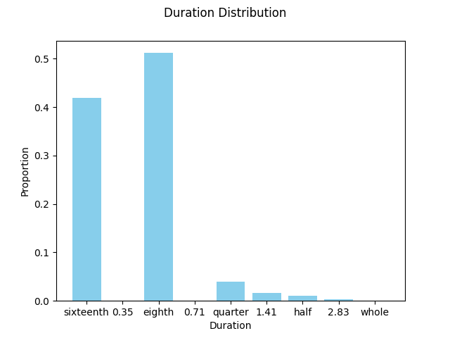

Note
Go to the end to download the full example code.
Plot the duration distribution of notes in a MIDI file.
This example demonstrates how to calculate and visualize the duration distribution of notes in a MIDI file.

/opt/hostedtoolcache/Python/3.10.16/x64/lib/python3.10/site-packages/partitura/io/importmidi.py:524: UserWarning: pitch spelling
warnings.warn("pitch spelling")
/opt/hostedtoolcache/Python/3.10.16/x64/lib/python3.10/site-packages/partitura/utils/misc.py:68: UserWarning: voice estimation
return f(*args, **kwargs)
/opt/hostedtoolcache/Python/3.10.16/x64/lib/python3.10/site-packages/partitura/io/importmidi.py:607: UserWarning: create_part
part = create_part(
/opt/hostedtoolcache/Python/3.10.16/x64/lib/python3.10/site-packages/partitura/io/importmidi.py:607: UserWarning: add notes
part = create_part(
/opt/hostedtoolcache/Python/3.10.16/x64/lib/python3.10/site-packages/partitura/io/importmidi.py:607: UserWarning: add time sigs and measures
part = create_part(
/opt/hostedtoolcache/Python/3.10.16/x64/lib/python3.10/site-packages/partitura/io/importmidi.py:607: UserWarning: tie notes
part = create_part(
/opt/hostedtoolcache/Python/3.10.16/x64/lib/python3.10/site-packages/partitura/io/importmidi.py:607: UserWarning: find tuplets
part = create_part(
/opt/hostedtoolcache/Python/3.10.16/x64/lib/python3.10/site-packages/partitura/io/importmidi.py:607: UserWarning: done create_part
part = create_part(
staff_numbers {None}
measures [(1, 0, 1440), ('timesig', 3, 4), ('keysig', 0), (2, 1440, 2880), (3, 2880, 4320), (4, 4320, 5760), (5, 5760, 7200), (6, 7200, 8640), (7, 8640, 10080), (8, 10080, 11520), (9, 11520, 12960), (10, 12960, 14400), (11, 14400, 15840), (12, 15840, 17280), (13, 17280, 18720), (14, 18720, 20160), (15, 20160, 21600), (16, 21600, 23040), (17, 23040, 24480), (18, 24480, 25920), (19, 25920, 27360), (20, 27360, 28800), (21, 28800, 30240), (22, 30240, 31680), (23, 31680, 33120), (24, 33120, 34560), (25, 34560, 36000), (26, 36000, 37440), (27, 37440, 38880), (28, 38880, 40320), (29, 40320, 41760), (30, 41760, 43200), (31, 43200, 44640), (32, 44640, 46080), (33, 46080, 47520), (34, 47520, 48960), (35, 48960, 50400), (36, 50400, 51840), (37, 51840, 53280), (38, 53280, 54720), (39, 54720, 56160), (40, 56160, 57600), (41, 57600, 59040), (42, 59040, 60480), (43, 60480, 61920), (44, 61920, 63360), (45, 63360, 64800), (46, 64800, 66240)]
div_to_quarter: div 1440 qtrs 3.0
div_to_quarter: div 0 qtrs 0.0
div_to_quarter: div 2880 qtrs 6.0
div_to_quarter: div 1440 qtrs 3.0
div_to_quarter: div 4320 qtrs 9.0
div_to_quarter: div 2880 qtrs 6.0
div_to_quarter: div 5760 qtrs 12.0
div_to_quarter: div 4320 qtrs 9.0
div_to_quarter: div 7200 qtrs 15.0
div_to_quarter: div 5760 qtrs 12.0
div_to_quarter: div 8640 qtrs 18.0
div_to_quarter: div 7200 qtrs 15.0
div_to_quarter: div 10080 qtrs 21.0
div_to_quarter: div 8640 qtrs 18.0
div_to_quarter: div 11520 qtrs 24.0
div_to_quarter: div 10080 qtrs 21.0
div_to_quarter: div 12960 qtrs 27.0
div_to_quarter: div 11520 qtrs 24.0
div_to_quarter: div 14400 qtrs 30.0
div_to_quarter: div 12960 qtrs 27.0
div_to_quarter: div 15840 qtrs 33.0
div_to_quarter: div 14400 qtrs 30.0
div_to_quarter: div 17280 qtrs 36.0
div_to_quarter: div 15840 qtrs 33.0
div_to_quarter: div 18720 qtrs 39.0
div_to_quarter: div 17280 qtrs 36.0
div_to_quarter: div 20160 qtrs 42.0
div_to_quarter: div 18720 qtrs 39.0
div_to_quarter: div 21600 qtrs 45.0
div_to_quarter: div 20160 qtrs 42.0
div_to_quarter: div 23040 qtrs 48.0
div_to_quarter: div 21600 qtrs 45.0
div_to_quarter: div 24480 qtrs 51.0
div_to_quarter: div 23040 qtrs 48.0
div_to_quarter: div 25920 qtrs 54.0
div_to_quarter: div 24480 qtrs 51.0
div_to_quarter: div 27360 qtrs 57.0
div_to_quarter: div 25920 qtrs 54.0
div_to_quarter: div 28800 qtrs 60.0
div_to_quarter: div 27360 qtrs 57.0
div_to_quarter: div 30240 qtrs 63.0
div_to_quarter: div 28800 qtrs 60.0
div_to_quarter: div 31680 qtrs 66.0
div_to_quarter: div 30240 qtrs 63.0
div_to_quarter: div 33120 qtrs 69.0
div_to_quarter: div 31680 qtrs 66.0
div_to_quarter: div 34560 qtrs 72.0
div_to_quarter: div 33120 qtrs 69.0
div_to_quarter: div 36000 qtrs 75.0
div_to_quarter: div 34560 qtrs 72.0
div_to_quarter: div 37440 qtrs 78.0
div_to_quarter: div 36000 qtrs 75.0
div_to_quarter: div 38880 qtrs 81.0
div_to_quarter: div 37440 qtrs 78.0
div_to_quarter: div 40320 qtrs 84.0
div_to_quarter: div 38880 qtrs 81.0
div_to_quarter: div 41760 qtrs 87.0
div_to_quarter: div 40320 qtrs 84.0
div_to_quarter: div 43200 qtrs 90.0
div_to_quarter: div 41760 qtrs 87.0
div_to_quarter: div 44640 qtrs 93.0
div_to_quarter: div 43200 qtrs 90.0
div_to_quarter: div 46080 qtrs 96.0
div_to_quarter: div 44640 qtrs 93.0
div_to_quarter: div 47520 qtrs 99.0
div_to_quarter: div 46080 qtrs 96.0
div_to_quarter: div 48960 qtrs 102.0
div_to_quarter: div 47520 qtrs 99.0
div_to_quarter: div 50400 qtrs 105.0
div_to_quarter: div 48960 qtrs 102.0
div_to_quarter: div 51840 qtrs 108.0
div_to_quarter: div 50400 qtrs 105.0
div_to_quarter: div 53280 qtrs 111.0
div_to_quarter: div 51840 qtrs 108.0
div_to_quarter: div 54720 qtrs 114.0
div_to_quarter: div 53280 qtrs 111.0
div_to_quarter: div 56160 qtrs 117.0
div_to_quarter: div 54720 qtrs 114.0
div_to_quarter: div 57600 qtrs 120.0
div_to_quarter: div 56160 qtrs 117.0
div_to_quarter: div 59040 qtrs 123.0
div_to_quarter: div 57600 qtrs 120.0
div_to_quarter: div 60480 qtrs 126.0
div_to_quarter: div 59040 qtrs 123.0
div_to_quarter: div 61920 qtrs 129.0
div_to_quarter: div 60480 qtrs 126.0
div_to_quarter: div 63360 qtrs 132.0
div_to_quarter: div 61920 qtrs 129.0
div_to_quarter: div 64800 qtrs 135.0
div_to_quarter: div 63360 qtrs 132.0
div_to_quarter: div 66240 qtrs 138.0
div_to_quarter: div 64800 qtrs 135.0
added measures to staff:
Staff at 0.000 delta 0.000 duration 138.000
Measure at 0.000 delta 0.000 duration 3.000
TimeSignature at 0.000 delta 0.000: 3/4
KeySignature at 3.000 delta 3.0000 flats
Measure at 3.000 delta 3.000 duration 3.000
Measure at 6.000 delta 6.000 duration 3.000
Measure at 9.000 delta 9.000 duration 3.000
Measure at 12.000 delta 12.000 duration 3.000
Measure at 15.000 delta 15.000 duration 3.000
Measure at 18.000 delta 18.000 duration 3.000
Measure at 21.000 delta 21.000 duration 3.000
Measure at 24.000 delta 24.000 duration 3.000
Measure at 27.000 delta 27.000 duration 3.000
Measure at 30.000 delta 30.000 duration 3.000
Measure at 33.000 delta 33.000 duration 3.000
Measure at 36.000 delta 36.000 duration 3.000
Measure at 39.000 delta 39.000 duration 3.000
Measure at 42.000 delta 42.000 duration 3.000
Measure at 45.000 delta 45.000 duration 3.000
Measure at 48.000 delta 48.000 duration 3.000
Measure at 51.000 delta 51.000 duration 3.000
Measure at 54.000 delta 54.000 duration 3.000
Measure at 57.000 delta 57.000 duration 3.000
Measure at 60.000 delta 60.000 duration 3.000
Measure at 63.000 delta 63.000 duration 3.000
Measure at 66.000 delta 66.000 duration 3.000
Measure at 69.000 delta 69.000 duration 3.000
Measure at 72.000 delta 72.000 duration 3.000
Measure at 75.000 delta 75.000 duration 3.000
Measure at 78.000 delta 78.000 duration 3.000
Measure at 81.000 delta 81.000 duration 3.000
Measure at 84.000 delta 84.000 duration 3.000
Measure at 87.000 delta 87.000 duration 3.000
Measure at 90.000 delta 90.000 duration 3.000
Measure at 93.000 delta 93.000 duration 3.000
Measure at 96.000 delta 96.000 duration 3.000
Measure at 99.000 delta 99.000 duration 3.000
Measure at 102.000 delta 102.000 duration 3.000
Measure at 105.000 delta 105.000 duration 3.000
Measure at 108.000 delta 108.000 duration 3.000
Measure at 111.000 delta 111.000 duration 3.000
Measure at 114.000 delta 114.000 duration 3.000
Measure at 117.000 delta 117.000 duration 3.000
Measure at 120.000 delta 120.000 duration 3.000
Measure at 123.000 delta 123.000 duration 3.000
Measure at 126.000 delta 126.000 duration 3.000
Measure at 129.000 delta 129.000 duration 3.000
Measure at 132.000 delta 132.000 duration 3.000
Measure at 135.000 delta 135.000 duration 3.000
div=0 -> qtr 0.0
measure_map(0) [ 0 1440]
measure_number_map(0) 1
div_to_quarter: div 0 qtrs 0.0
Note or Rest start 0.0 item.start.t 0
ignoring 0-- Clef sign=G line=2 number=1
ignoring 0--1440 Measure number=1 name=1
ignoring 0-- TimeSignature 3/4
div_to_quarter: div 0 qtrs 0.0
Tempo start 0.0 tempo 1.1666664722222546
append_beat_tempo 1.1666664722222546 <amads.core.time_map.MapBeat object at 0x7fcbaf3de5c0>
ignoring 0-- KeySignature fifths=0, mode=major (C)
div_to_quarter: div 240 qtrs 0.5
Note or Rest start 0.5 item.start.t 240
div_to_quarter: div 480 qtrs 1.0
Note or Rest start 1.0 item.start.t 480
div_to_quarter: div 720 qtrs 1.5
Note or Rest start 1.5 item.start.t 720
div_to_quarter: div 960 qtrs 2.0
Note or Rest start 2.0 item.start.t 960
div_to_quarter: div 1200 qtrs 2.5
Note or Rest start 2.5 item.start.t 1200
div_to_quarter: div 1440 qtrs 3.0
Note or Rest start 3.0 item.start.t 1440
ignoring 1440--2880 Measure number=2 name=2
div_to_quarter: div 2400 qtrs 5.0
Note or Rest start 5.0 item.start.t 2400
div_to_quarter: div 2640 qtrs 5.5
Note or Rest start 5.5 item.start.t 2640
div_to_quarter: div 2880 qtrs 6.0
Note or Rest start 6.0 item.start.t 2880
ignoring 2880--4320 Measure number=3 name=3
div_to_quarter: div 3120 qtrs 6.5
Note or Rest start 6.5 item.start.t 3120
div_to_quarter: div 3360 qtrs 7.0
Note or Rest start 7.0 item.start.t 3360
div_to_quarter: div 3600 qtrs 7.5
Note or Rest start 7.5 item.start.t 3600
div_to_quarter: div 3840 qtrs 8.0
Note or Rest start 8.0 item.start.t 3840
div_to_quarter: div 4080 qtrs 8.5
Note or Rest start 8.5 item.start.t 4080
div_to_quarter: div 4320 qtrs 9.0
Note or Rest start 9.0 item.start.t 4320
ignoring 4320--5760 Measure number=4 name=4
div_to_quarter: div 4560 qtrs 9.5
Note or Rest start 9.5 item.start.t 4560
div_to_quarter: div 4800 qtrs 10.0
Note or Rest start 10.0 item.start.t 4800
div_to_quarter: div 5040 qtrs 10.5
Note or Rest start 10.5 item.start.t 5040
div_to_quarter: div 5280 qtrs 11.0
Note or Rest start 11.0 item.start.t 5280
div_to_quarter: div 5760 qtrs 12.0
Note or Rest start 12.0 item.start.t 5760
ignoring 5760--7200 Measure number=5 name=5
div_to_quarter: div 6000 qtrs 12.5
Note or Rest start 12.5 item.start.t 6000
div_to_quarter: div 6240 qtrs 13.0
Note or Rest start 13.0 item.start.t 6240
div_to_quarter: div 6480 qtrs 13.5
Note or Rest start 13.5 item.start.t 6480
div_to_quarter: div 6720 qtrs 14.0
Note or Rest start 14.0 item.start.t 6720
div_to_quarter: div 6960 qtrs 14.5
Note or Rest start 14.5 item.start.t 6960
div_to_quarter: div 7200 qtrs 15.0
Note or Rest start 15.0 item.start.t 7200
ignoring 7200--8640 Measure number=6 name=6
div_to_quarter: div 7680 qtrs 16.0
Note or Rest start 16.0 item.start.t 7680
div_to_quarter: div 8160 qtrs 17.0
Note or Rest start 17.0 item.start.t 8160
div_to_quarter: div 8640 qtrs 18.0
Note or Rest start 18.0 item.start.t 8640
ignoring 8640--10080 Measure number=7 name=7
div_to_quarter: div 8880 qtrs 18.5
Note or Rest start 18.5 item.start.t 8880
div_to_quarter: div 9120 qtrs 19.0
Note or Rest start 19.0 item.start.t 9120
div_to_quarter: div 9360 qtrs 19.5
Note or Rest start 19.5 item.start.t 9360
div_to_quarter: div 9600 qtrs 20.0
Note or Rest start 20.0 item.start.t 9600
div_to_quarter: div 9840 qtrs 20.5
Note or Rest start 20.5 item.start.t 9840
div_to_quarter: div 10080 qtrs 21.0
Note or Rest start 21.0 item.start.t 10080
ignoring 10080--11520 Measure number=8 name=8
div_to_quarter: div 10560 qtrs 22.0
Note or Rest start 22.0 item.start.t 10560
div_to_quarter: div 11040 qtrs 23.0
Note or Rest start 23.0 item.start.t 11040
div_to_quarter: div 11280 qtrs 23.5
Note or Rest start 23.5 item.start.t 11280
div_to_quarter: div 11520 qtrs 24.0
Note or Rest start 24.0 item.start.t 11520
ignoring 11520--12960 Measure number=9 name=9
div_to_quarter: div 11760 qtrs 24.5
Note or Rest start 24.5 item.start.t 11760
div_to_quarter: div 12000 qtrs 25.0
Note or Rest start 25.0 item.start.t 12000
div_to_quarter: div 12240 qtrs 25.5
Note or Rest start 25.5 item.start.t 12240
div_to_quarter: div 12480 qtrs 26.0
Note or Rest start 26.0 item.start.t 12480
div_to_quarter: div 12720 qtrs 26.5
Note or Rest start 26.5 item.start.t 12720
div_to_quarter: div 12960 qtrs 27.0
Note or Rest start 27.0 item.start.t 12960
ignoring 12960--14400 Measure number=10 name=10
div_to_quarter: div 13680 qtrs 28.5
Note or Rest start 28.5 item.start.t 13680
div_to_quarter: div 13800 qtrs 28.75
Note or Rest start 28.75 item.start.t 13800
div_to_quarter: div 13920 qtrs 29.0
Note or Rest start 29.0 item.start.t 13920
div_to_quarter: div 14040 qtrs 29.25
Note or Rest start 29.25 item.start.t 14040
div_to_quarter: div 14160 qtrs 29.5
Note or Rest start 29.5 item.start.t 14160
div_to_quarter: div 14280 qtrs 29.75
Note or Rest start 29.75 item.start.t 14280
div_to_quarter: div 14400 qtrs 30.0
Note or Rest start 30.0 item.start.t 14400
ignoring 14400--15840 Measure number=11 name=11
div_to_quarter: div 14520 qtrs 30.25
Note or Rest start 30.25 item.start.t 14520
div_to_quarter: div 14640 qtrs 30.5
Note or Rest start 30.5 item.start.t 14640
div_to_quarter: div 14760 qtrs 30.75
Note or Rest start 30.75 item.start.t 14760
div_to_quarter: div 14880 qtrs 31.0
Note or Rest start 31.0 item.start.t 14880
div_to_quarter: div 15000 qtrs 31.25
Note or Rest start 31.25 item.start.t 15000
div_to_quarter: div 15120 qtrs 31.5
Note or Rest start 31.5 item.start.t 15120
div_to_quarter: div 15240 qtrs 31.75
Note or Rest start 31.75 item.start.t 15240
div_to_quarter: div 15360 qtrs 32.0
Note or Rest start 32.0 item.start.t 15360
div_to_quarter: div 15480 qtrs 32.25
Note or Rest start 32.25 item.start.t 15480
div_to_quarter: div 15600 qtrs 32.5
Note or Rest start 32.5 item.start.t 15600
div_to_quarter: div 15720 qtrs 32.75
Note or Rest start 32.75 item.start.t 15720
div_to_quarter: div 15840 qtrs 33.0
Note or Rest start 33.0 item.start.t 15840
ignoring 15840--17280 Measure number=12 name=12
div_to_quarter: div 16560 qtrs 34.5
Note or Rest start 34.5 item.start.t 16560
div_to_quarter: div 16680 qtrs 34.75
Note or Rest start 34.75 item.start.t 16680
div_to_quarter: div 16800 qtrs 35.0
Note or Rest start 35.0 item.start.t 16800
div_to_quarter: div 16920 qtrs 35.25
Note or Rest start 35.25 item.start.t 16920
div_to_quarter: div 17040 qtrs 35.5
Note or Rest start 35.5 item.start.t 17040
div_to_quarter: div 17160 qtrs 35.75
Note or Rest start 35.75 item.start.t 17160
div_to_quarter: div 17280 qtrs 36.0
Note or Rest start 36.0 item.start.t 17280
ignoring 17280--18720 Measure number=13 name=13
div_to_quarter: div 17400 qtrs 36.25
Note or Rest start 36.25 item.start.t 17400
div_to_quarter: div 17520 qtrs 36.5
Note or Rest start 36.5 item.start.t 17520
div_to_quarter: div 17640 qtrs 36.75
Note or Rest start 36.75 item.start.t 17640
div_to_quarter: div 17760 qtrs 37.0
Note or Rest start 37.0 item.start.t 17760
div_to_quarter: div 17880 qtrs 37.25
Note or Rest start 37.25 item.start.t 17880
div_to_quarter: div 18000 qtrs 37.5
Note or Rest start 37.5 item.start.t 18000
div_to_quarter: div 18120 qtrs 37.75
Note or Rest start 37.75 item.start.t 18120
div_to_quarter: div 18240 qtrs 38.0
Note or Rest start 38.0 item.start.t 18240
div_to_quarter: div 18360 qtrs 38.25
Note or Rest start 38.25 item.start.t 18360
div_to_quarter: div 18480 qtrs 38.5
Note or Rest start 38.5 item.start.t 18480
div_to_quarter: div 18600 qtrs 38.75
Note or Rest start 38.75 item.start.t 18600
div_to_quarter: div 18720 qtrs 39.0
Note or Rest start 39.0 item.start.t 18720
ignoring 18720--20160 Measure number=14 name=14
div_to_quarter: div 18960 qtrs 39.5
Note or Rest start 39.5 item.start.t 18960
div_to_quarter: div 19080 qtrs 39.75
Note or Rest start 39.75 item.start.t 19080
div_to_quarter: div 19200 qtrs 40.0
Note or Rest start 40.0 item.start.t 19200
div_to_quarter: div 19320 qtrs 40.25
Note or Rest start 40.25 item.start.t 19320
div_to_quarter: div 19440 qtrs 40.5
Note or Rest start 40.5 item.start.t 19440
div_to_quarter: div 19560 qtrs 40.75
Note or Rest start 40.75 item.start.t 19560
div_to_quarter: div 19680 qtrs 41.0
Note or Rest start 41.0 item.start.t 19680
div_to_quarter: div 19800 qtrs 41.25
Note or Rest start 41.25 item.start.t 19800
div_to_quarter: div 19920 qtrs 41.5
Note or Rest start 41.5 item.start.t 19920
div_to_quarter: div 20040 qtrs 41.75
Note or Rest start 41.75 item.start.t 20040
div_to_quarter: div 20160 qtrs 42.0
Note or Rest start 42.0 item.start.t 20160
ignoring 20160--21600 Measure number=15 name=15
div_to_quarter: div 20400 qtrs 42.5
Note or Rest start 42.5 item.start.t 20400
div_to_quarter: div 20520 qtrs 42.75
Note or Rest start 42.75 item.start.t 20520
div_to_quarter: div 20640 qtrs 43.0
Note or Rest start 43.0 item.start.t 20640
div_to_quarter: div 20880 qtrs 43.5
Note or Rest start 43.5 item.start.t 20880
div_to_quarter: div 21120 qtrs 44.0
Note or Rest start 44.0 item.start.t 21120
div_to_quarter: div 21360 qtrs 44.5
Note or Rest start 44.5 item.start.t 21360
div_to_quarter: div 21480 qtrs 44.75
Note or Rest start 44.75 item.start.t 21480
div_to_quarter: div 21600 qtrs 45.0
Note or Rest start 45.0 item.start.t 21600
ignoring 21600--23040 Measure number=16 name=16
div_to_quarter: div 23040 qtrs 48.0
Note or Rest start 48.0 item.start.t 23040
ignoring 23040--24480 Measure number=17 name=17
div_to_quarter: div 23280 qtrs 48.5
Note or Rest start 48.5 item.start.t 23280
div_to_quarter: div 23520 qtrs 49.0
Note or Rest start 49.0 item.start.t 23520
div_to_quarter: div 23760 qtrs 49.5
Note or Rest start 49.5 item.start.t 23760
div_to_quarter: div 24000 qtrs 50.0
Note or Rest start 50.0 item.start.t 24000
div_to_quarter: div 24240 qtrs 50.5
Note or Rest start 50.5 item.start.t 24240
div_to_quarter: div 24480 qtrs 51.0
Note or Rest start 51.0 item.start.t 24480
ignoring 24480--25920 Measure number=18 name=18
div_to_quarter: div 25440 qtrs 53.0
Note or Rest start 53.0 item.start.t 25440
div_to_quarter: div 25680 qtrs 53.5
Note or Rest start 53.5 item.start.t 25680
div_to_quarter: div 25920 qtrs 54.0
Note or Rest start 54.0 item.start.t 25920
ignoring 25920--27360 Measure number=19 name=19
div_to_quarter: div 26160 qtrs 54.5
Note or Rest start 54.5 item.start.t 26160
div_to_quarter: div 26400 qtrs 55.0
Note or Rest start 55.0 item.start.t 26400
div_to_quarter: div 26640 qtrs 55.5
Note or Rest start 55.5 item.start.t 26640
div_to_quarter: div 26880 qtrs 56.0
Note or Rest start 56.0 item.start.t 26880
div_to_quarter: div 27120 qtrs 56.5
Note or Rest start 56.5 item.start.t 27120
div_to_quarter: div 27360 qtrs 57.0
Note or Rest start 57.0 item.start.t 27360
ignoring 27360--28800 Measure number=20 name=20
div_to_quarter: div 27840 qtrs 58.0
Note or Rest start 58.0 item.start.t 27840
div_to_quarter: div 28080 qtrs 58.5
Note or Rest start 58.5 item.start.t 28080
div_to_quarter: div 28320 qtrs 59.0
Note or Rest start 59.0 item.start.t 28320
div_to_quarter: div 28800 qtrs 60.0
Note or Rest start 60.0 item.start.t 28800
ignoring 28800--30240 Measure number=21 name=21
div_to_quarter: div 29040 qtrs 60.5
Note or Rest start 60.5 item.start.t 29040
div_to_quarter: div 29160 qtrs 60.75
Note or Rest start 60.75 item.start.t 29160
div_to_quarter: div 29280 qtrs 61.0
Note or Rest start 61.0 item.start.t 29280
div_to_quarter: div 29520 qtrs 61.5
Note or Rest start 61.5 item.start.t 29520
div_to_quarter: div 29760 qtrs 62.0
Note or Rest start 62.0 item.start.t 29760
div_to_quarter: div 30000 qtrs 62.5
Note or Rest start 62.5 item.start.t 30000
div_to_quarter: div 30240 qtrs 63.0
Note or Rest start 63.0 item.start.t 30240
ignoring 30240--31680 Measure number=22 name=22
div_to_quarter: div 30480 qtrs 63.5
Note or Rest start 63.5 item.start.t 30480
div_to_quarter: div 30600 qtrs 63.75
Note or Rest start 63.75 item.start.t 30600
div_to_quarter: div 30720 qtrs 64.0
Note or Rest start 64.0 item.start.t 30720
div_to_quarter: div 30960 qtrs 64.5
Note or Rest start 64.5 item.start.t 30960
div_to_quarter: div 31200 qtrs 65.0
Note or Rest start 65.0 item.start.t 31200
div_to_quarter: div 31440 qtrs 65.5
Note or Rest start 65.5 item.start.t 31440
div_to_quarter: div 31680 qtrs 66.0
Note or Rest start 66.0 item.start.t 31680
ignoring 31680--33120 Measure number=23 name=23
div_to_quarter: div 31800 qtrs 66.25
Note or Rest start 66.25 item.start.t 31800
div_to_quarter: div 31920 qtrs 66.5
Note or Rest start 66.5 item.start.t 31920
div_to_quarter: div 32040 qtrs 66.75
Note or Rest start 66.75 item.start.t 32040
div_to_quarter: div 32160 qtrs 67.0
Note or Rest start 67.0 item.start.t 32160
div_to_quarter: div 32400 qtrs 67.5
Note or Rest start 67.5 item.start.t 32400
div_to_quarter: div 32640 qtrs 68.0
Note or Rest start 68.0 item.start.t 32640
div_to_quarter: div 32880 qtrs 68.5
Note or Rest start 68.5 item.start.t 32880
div_to_quarter: div 33120 qtrs 69.0
Note or Rest start 69.0 item.start.t 33120
ignoring 33120--34560 Measure number=24 name=24
div_to_quarter: div 33360 qtrs 69.5
Note or Rest start 69.5 item.start.t 33360
div_to_quarter: div 33480 qtrs 69.75
Note or Rest start 69.75 item.start.t 33480
div_to_quarter: div 33600 qtrs 70.0
Note or Rest start 70.0 item.start.t 33600
div_to_quarter: div 33840 qtrs 70.5
Note or Rest start 70.5 item.start.t 33840
div_to_quarter: div 33960 qtrs 70.75
Note or Rest start 70.75 item.start.t 33960
div_to_quarter: div 34080 qtrs 71.0
Note or Rest start 71.0 item.start.t 34080
div_to_quarter: div 34320 qtrs 71.5
Note or Rest start 71.5 item.start.t 34320
div_to_quarter: div 34440 qtrs 71.75
Note or Rest start 71.75 item.start.t 34440
div_to_quarter: div 34560 qtrs 72.0
Note or Rest start 72.0 item.start.t 34560
ignoring 34560--36000 Measure number=25 name=25
div_to_quarter: div 34800 qtrs 72.5
Note or Rest start 72.5 item.start.t 34800
div_to_quarter: div 34920 qtrs 72.75
Note or Rest start 72.75 item.start.t 34920
div_to_quarter: div 35040 qtrs 73.0
Note or Rest start 73.0 item.start.t 35040
div_to_quarter: div 35280 qtrs 73.5
Note or Rest start 73.5 item.start.t 35280
div_to_quarter: div 35520 qtrs 74.0
Note or Rest start 74.0 item.start.t 35520
div_to_quarter: div 35640 qtrs 74.25
Note or Rest start 74.25 item.start.t 35640
div_to_quarter: div 35760 qtrs 74.5
Note or Rest start 74.5 item.start.t 35760
div_to_quarter: div 35880 qtrs 74.75
Note or Rest start 74.75 item.start.t 35880
div_to_quarter: div 36000 qtrs 75.0
Note or Rest start 75.0 item.start.t 36000
ignoring 36000--37440 Measure number=26 name=26
div_to_quarter: div 36240 qtrs 75.5
Note or Rest start 75.5 item.start.t 36240
div_to_quarter: div 36480 qtrs 76.0
Note or Rest start 76.0 item.start.t 36480
div_to_quarter: div 36720 qtrs 76.5
Note or Rest start 76.5 item.start.t 36720
div_to_quarter: div 36960 qtrs 77.0
Note or Rest start 77.0 item.start.t 36960
div_to_quarter: div 37200 qtrs 77.5
Note or Rest start 77.5 item.start.t 37200
div_to_quarter: div 37440 qtrs 78.0
Note or Rest start 78.0 item.start.t 37440
ignoring 37440--38880 Measure number=27 name=27
div_to_quarter: div 37680 qtrs 78.5
Note or Rest start 78.5 item.start.t 37680
div_to_quarter: div 37920 qtrs 79.0
Note or Rest start 79.0 item.start.t 37920
div_to_quarter: div 38160 qtrs 79.5
Note or Rest start 79.5 item.start.t 38160
div_to_quarter: div 38400 qtrs 80.0
Note or Rest start 80.0 item.start.t 38400
div_to_quarter: div 38640 qtrs 80.5
Note or Rest start 80.5 item.start.t 38640
div_to_quarter: div 38880 qtrs 81.0
Note or Rest start 81.0 item.start.t 38880
ignoring 38880--40320 Measure number=28 name=28
div_to_quarter: div 39120 qtrs 81.5
Note or Rest start 81.5 item.start.t 39120
div_to_quarter: div 39360 qtrs 82.0
Note or Rest start 82.0 item.start.t 39360
div_to_quarter: div 39600 qtrs 82.5
Note or Rest start 82.5 item.start.t 39600
div_to_quarter: div 39840 qtrs 83.0
Note or Rest start 83.0 item.start.t 39840
div_to_quarter: div 40080 qtrs 83.5
Note or Rest start 83.5 item.start.t 40080
div_to_quarter: div 40320 qtrs 84.0
Note or Rest start 84.0 item.start.t 40320
ignoring 40320--41760 Measure number=29 name=29
div_to_quarter: div 40560 qtrs 84.5
Note or Rest start 84.5 item.start.t 40560
div_to_quarter: div 40800 qtrs 85.0
Note or Rest start 85.0 item.start.t 40800
div_to_quarter: div 41040 qtrs 85.5
Note or Rest start 85.5 item.start.t 41040
div_to_quarter: div 41280 qtrs 86.0
Note or Rest start 86.0 item.start.t 41280
div_to_quarter: div 41520 qtrs 86.5
Note or Rest start 86.5 item.start.t 41520
div_to_quarter: div 41760 qtrs 87.0
Note or Rest start 87.0 item.start.t 41760
ignoring 41760--43200 Measure number=30 name=30
div_to_quarter: div 42000 qtrs 87.5
Note or Rest start 87.5 item.start.t 42000
div_to_quarter: div 42240 qtrs 88.0
Note or Rest start 88.0 item.start.t 42240
div_to_quarter: div 42480 qtrs 88.5
Note or Rest start 88.5 item.start.t 42480
div_to_quarter: div 42720 qtrs 89.0
Note or Rest start 89.0 item.start.t 42720
div_to_quarter: div 42960 qtrs 89.5
Note or Rest start 89.5 item.start.t 42960
div_to_quarter: div 43200 qtrs 90.0
Note or Rest start 90.0 item.start.t 43200
ignoring 43200--44640 Measure number=31 name=31
div_to_quarter: div 43440 qtrs 90.5
Note or Rest start 90.5 item.start.t 43440
div_to_quarter: div 43680 qtrs 91.0
Note or Rest start 91.0 item.start.t 43680
div_to_quarter: div 43920 qtrs 91.5
Note or Rest start 91.5 item.start.t 43920
div_to_quarter: div 44160 qtrs 92.0
Note or Rest start 92.0 item.start.t 44160
div_to_quarter: div 44400 qtrs 92.5
Note or Rest start 92.5 item.start.t 44400
div_to_quarter: div 44640 qtrs 93.0
Note or Rest start 93.0 item.start.t 44640
ignoring 44640--46080 Measure number=32 name=32
div_to_quarter: div 44880 qtrs 93.5
Note or Rest start 93.5 item.start.t 44880
div_to_quarter: div 45120 qtrs 94.0
Note or Rest start 94.0 item.start.t 45120
div_to_quarter: div 45360 qtrs 94.5
Note or Rest start 94.5 item.start.t 45360
div_to_quarter: div 45600 qtrs 95.0
Note or Rest start 95.0 item.start.t 45600
div_to_quarter: div 45840 qtrs 95.5
Note or Rest start 95.5 item.start.t 45840
div_to_quarter: div 46080 qtrs 96.0
Note or Rest start 96.0 item.start.t 46080
ignoring 46080--47520 Measure number=33 name=33
div_to_quarter: div 46320 qtrs 96.5
Note or Rest start 96.5 item.start.t 46320
div_to_quarter: div 46440 qtrs 96.75
Note or Rest start 96.75 item.start.t 46440
div_to_quarter: div 46560 qtrs 97.0
Note or Rest start 97.0 item.start.t 46560
div_to_quarter: div 46800 qtrs 97.5
Note or Rest start 97.5 item.start.t 46800
div_to_quarter: div 47040 qtrs 98.0
Note or Rest start 98.0 item.start.t 47040
div_to_quarter: div 47280 qtrs 98.5
Note or Rest start 98.5 item.start.t 47280
div_to_quarter: div 47400 qtrs 98.75
Note or Rest start 98.75 item.start.t 47400
div_to_quarter: div 47520 qtrs 99.0
Note or Rest start 99.0 item.start.t 47520
ignoring 47520--48960 Measure number=34 name=34
div_to_quarter: div 48240 qtrs 100.5
Note or Rest start 100.5 item.start.t 48240
div_to_quarter: div 48480 qtrs 101.0
Note or Rest start 101.0 item.start.t 48480
div_to_quarter: div 48960 qtrs 102.0
Note or Rest start 102.0 item.start.t 48960
ignoring 48960--50400 Measure number=35 name=35
div_to_quarter: div 49200 qtrs 102.5
Note or Rest start 102.5 item.start.t 49200
div_to_quarter: div 49440 qtrs 103.0
Note or Rest start 103.0 item.start.t 49440
div_to_quarter: div 49680 qtrs 103.5
Note or Rest start 103.5 item.start.t 49680
div_to_quarter: div 49920 qtrs 104.0
Note or Rest start 104.0 item.start.t 49920
div_to_quarter: div 50160 qtrs 104.5
Note or Rest start 104.5 item.start.t 50160
div_to_quarter: div 50400 qtrs 105.0
Note or Rest start 105.0 item.start.t 50400
ignoring 50400--51840 Measure number=36 name=36
div_to_quarter: div 50880 qtrs 106.0
Note or Rest start 106.0 item.start.t 50880
div_to_quarter: div 51360 qtrs 107.0
Note or Rest start 107.0 item.start.t 51360
div_to_quarter: div 51840 qtrs 108.0
Note or Rest start 108.0 item.start.t 51840
ignoring 51840--53280 Measure number=37 name=37
div_to_quarter: div 52080 qtrs 108.5
Note or Rest start 108.5 item.start.t 52080
div_to_quarter: div 52320 qtrs 109.0
Note or Rest start 109.0 item.start.t 52320
div_to_quarter: div 52560 qtrs 109.5
Note or Rest start 109.5 item.start.t 52560
div_to_quarter: div 52800 qtrs 110.0
Note or Rest start 110.0 item.start.t 52800
div_to_quarter: div 53040 qtrs 110.5
Note or Rest start 110.5 item.start.t 53040
div_to_quarter: div 53280 qtrs 111.0
Note or Rest start 111.0 item.start.t 53280
ignoring 53280--54720 Measure number=38 name=38
div_to_quarter: div 53520 qtrs 111.5
Note or Rest start 111.5 item.start.t 53520
div_to_quarter: div 53760 qtrs 112.0
Note or Rest start 112.0 item.start.t 53760
div_to_quarter: div 54000 qtrs 112.5
Note or Rest start 112.5 item.start.t 54000
div_to_quarter: div 54240 qtrs 113.0
Note or Rest start 113.0 item.start.t 54240
div_to_quarter: div 54480 qtrs 113.5
Note or Rest start 113.5 item.start.t 54480
div_to_quarter: div 54720 qtrs 114.0
Note or Rest start 114.0 item.start.t 54720
ignoring 54720--56160 Measure number=39 name=39
div_to_quarter: div 54960 qtrs 114.5
Note or Rest start 114.5 item.start.t 54960
div_to_quarter: div 55200 qtrs 115.0
Note or Rest start 115.0 item.start.t 55200
div_to_quarter: div 55440 qtrs 115.5
Note or Rest start 115.5 item.start.t 55440
div_to_quarter: div 55680 qtrs 116.0
Note or Rest start 116.0 item.start.t 55680
div_to_quarter: div 55920 qtrs 116.5
Note or Rest start 116.5 item.start.t 55920
div_to_quarter: div 56160 qtrs 117.0
Note or Rest start 117.0 item.start.t 56160
ignoring 56160--57600 Measure number=40 name=40
div_to_quarter: div 56880 qtrs 118.5
Note or Rest start 118.5 item.start.t 56880
div_to_quarter: div 57000 qtrs 118.75
Note or Rest start 118.75 item.start.t 57000
div_to_quarter: div 57120 qtrs 119.0
Note or Rest start 119.0 item.start.t 57120
div_to_quarter: div 57240 qtrs 119.25
Note or Rest start 119.25 item.start.t 57240
div_to_quarter: div 57360 qtrs 119.5
Note or Rest start 119.5 item.start.t 57360
div_to_quarter: div 57480 qtrs 119.75
Note or Rest start 119.75 item.start.t 57480
div_to_quarter: div 57600 qtrs 120.0
Note or Rest start 120.0 item.start.t 57600
ignoring 57600--59040 Measure number=41 name=41
div_to_quarter: div 57720 qtrs 120.25
Note or Rest start 120.25 item.start.t 57720
div_to_quarter: div 57840 qtrs 120.5
Note or Rest start 120.5 item.start.t 57840
div_to_quarter: div 57960 qtrs 120.75
Note or Rest start 120.75 item.start.t 57960
div_to_quarter: div 58080 qtrs 121.0
Note or Rest start 121.0 item.start.t 58080
div_to_quarter: div 58200 qtrs 121.25
Note or Rest start 121.25 item.start.t 58200
div_to_quarter: div 58320 qtrs 121.5
Note or Rest start 121.5 item.start.t 58320
div_to_quarter: div 58440 qtrs 121.75
Note or Rest start 121.75 item.start.t 58440
div_to_quarter: div 58560 qtrs 122.0
Note or Rest start 122.0 item.start.t 58560
div_to_quarter: div 58680 qtrs 122.25
Note or Rest start 122.25 item.start.t 58680
div_to_quarter: div 58800 qtrs 122.5
Note or Rest start 122.5 item.start.t 58800
div_to_quarter: div 58920 qtrs 122.75
Note or Rest start 122.75 item.start.t 58920
div_to_quarter: div 59040 qtrs 123.0
Note or Rest start 123.0 item.start.t 59040
ignoring 59040--60480 Measure number=42 name=42
div_to_quarter: div 59760 qtrs 124.5
Note or Rest start 124.5 item.start.t 59760
div_to_quarter: div 59880 qtrs 124.75
Note or Rest start 124.75 item.start.t 59880
div_to_quarter: div 60000 qtrs 125.0
Note or Rest start 125.0 item.start.t 60000
div_to_quarter: div 60120 qtrs 125.25
Note or Rest start 125.25 item.start.t 60120
div_to_quarter: div 60240 qtrs 125.5
Note or Rest start 125.5 item.start.t 60240
div_to_quarter: div 60360 qtrs 125.75
Note or Rest start 125.75 item.start.t 60360
div_to_quarter: div 60480 qtrs 126.0
Note or Rest start 126.0 item.start.t 60480
ignoring 60480--61920 Measure number=43 name=43
div_to_quarter: div 60600 qtrs 126.25
Note or Rest start 126.25 item.start.t 60600
div_to_quarter: div 60720 qtrs 126.5
Note or Rest start 126.5 item.start.t 60720
div_to_quarter: div 60840 qtrs 126.75
Note or Rest start 126.75 item.start.t 60840
div_to_quarter: div 60960 qtrs 127.0
Note or Rest start 127.0 item.start.t 60960
div_to_quarter: div 61080 qtrs 127.25
Note or Rest start 127.25 item.start.t 61080
div_to_quarter: div 61200 qtrs 127.5
Note or Rest start 127.5 item.start.t 61200
div_to_quarter: div 61320 qtrs 127.75
Note or Rest start 127.75 item.start.t 61320
div_to_quarter: div 61440 qtrs 128.0
Note or Rest start 128.0 item.start.t 61440
div_to_quarter: div 61560 qtrs 128.25
Note or Rest start 128.25 item.start.t 61560
div_to_quarter: div 61680 qtrs 128.5
Note or Rest start 128.5 item.start.t 61680
div_to_quarter: div 61800 qtrs 128.75
Note or Rest start 128.75 item.start.t 61800
div_to_quarter: div 61920 qtrs 129.0
Note or Rest start 129.0 item.start.t 61920
ignoring 61920--63360 Measure number=44 name=44
div_to_quarter: div 62160 qtrs 129.5
Note or Rest start 129.5 item.start.t 62160
div_to_quarter: div 62280 qtrs 129.75
Note or Rest start 129.75 item.start.t 62280
div_to_quarter: div 62400 qtrs 130.0
Note or Rest start 130.0 item.start.t 62400
div_to_quarter: div 62520 qtrs 130.25
Note or Rest start 130.25 item.start.t 62520
div_to_quarter: div 62640 qtrs 130.5
Note or Rest start 130.5 item.start.t 62640
div_to_quarter: div 62760 qtrs 130.75
Note or Rest start 130.75 item.start.t 62760
div_to_quarter: div 62880 qtrs 131.0
Note or Rest start 131.0 item.start.t 62880
div_to_quarter: div 63000 qtrs 131.25
Note or Rest start 131.25 item.start.t 63000
div_to_quarter: div 63120 qtrs 131.5
Note or Rest start 131.5 item.start.t 63120
div_to_quarter: div 63240 qtrs 131.75
Note or Rest start 131.75 item.start.t 63240
div_to_quarter: div 63360 qtrs 132.0
Note or Rest start 132.0 item.start.t 63360
ignoring 63360--64800 Measure number=45 name=45
div_to_quarter: div 63480 qtrs 132.25
Note or Rest start 132.25 item.start.t 63480
div_to_quarter: div 63600 qtrs 132.5
Note or Rest start 132.5 item.start.t 63600
div_to_quarter: div 63720 qtrs 132.75
Note or Rest start 132.75 item.start.t 63720
div_to_quarter: div 63840 qtrs 133.0
Note or Rest start 133.0 item.start.t 63840
div_to_quarter: div 64080 qtrs 133.5
Note or Rest start 133.5 item.start.t 64080
div_to_quarter: div 64320 qtrs 134.0
Note or Rest start 134.0 item.start.t 64320
div_to_quarter: div 64560 qtrs 134.5
Note or Rest start 134.5 item.start.t 64560
div_to_quarter: div 64680 qtrs 134.75
Note or Rest start 134.75 item.start.t 64680
div_to_quarter: div 64800 qtrs 135.0
Note or Rest start 135.0 item.start.t 64800
ignoring 64800--66240 Measure number=46 name=46
events [['Note', 0.0, 0.5, None, 69, 'n0', None], ['Note', 0.5, 0.5, None, 71, 'n1', None], ['Note', 1.0, 0.5, None, 72, 'n2', None], ['Note', 1.5, 0.5, None, 76, 'n3', None], ['Note', 2.0, 0.5, None, 68, 'n4', None], ['Note', 2.5, 0.5, None, 69, 'n5', None], ['Note', 3.0, 2.0, None, 65, 'n6', None], ['Note', 5.0, 0.5, None, 64, 'n7', None], ['Note', 5.5, 0.5, None, 66, 'n8', None], ['Note', 6.0, 0.5, None, 68, 'n9', None], ['Note', 6.5, 0.5, None, 69, 'n10', None], ['Note', 7.0, 0.5, None, 71, 'n11', None], ['Note', 7.5, 0.5, None, 74, 'n12', None], ['Note', 8.0, 0.5, None, 77, 'n13', None], ['Note', 8.5, 0.5, None, 76, 'n14', None], ['Note', 9.0, 0.5, None, 74, 'n15', None], ['Note', 9.5, 0.5, None, 71, 'n16', None], ['Note', 10.0, 0.5, None, 72, 'n17', None], ['Note', 10.5, 0.5, None, 69, 'n18', None], ['Note', 11.0, 1.0, None, 71, 'n19', None], ['Note', 12.0, 0.5, None, 69, 'n20', None], ['Note', 12.5, 0.5, None, 71, 'n21', None], ['Note', 13.0, 0.5, None, 72, 'n22', None], ['Note', 13.5, 0.5, None, 76, 'n23', None], ['Note', 14.0, 0.5, None, 68, 'n24', None], ['Note', 14.5, 0.5, None, 69, 'n25', None], ['Note', 15.0, 1.0, None, 77, 'n26', None], ['Note', 16.0, 1.0, None, 76, 'n27', None], ['Note', 17.0, 1.0, None, 74, 'n28', None], ['Note', 18.0, 0.5, None, 67, 'n29', None], ['Note', 18.5, 0.5, None, 69, 'n30', None], ['Note', 19.0, 0.5, None, 71, 'n31', None], ['Note', 19.5, 0.5, None, 74, 'n32', None], ['Note', 20.0, 0.5, None, 66, 'n33', None], ['Note', 20.5, 0.5, None, 67, 'n34', None], ['Note', 21.0, 1.0, None, 76, 'n35', None], ['Note', 22.0, 1.0, None, 74, 'n36', None], ['Note', 23.0, 0.5, None, 72, 'n37', None], ['Note', 23.5, 0.5, None, 76, 'n38', None], ['Note', 24.0, 0.5, None, 79, 'n39', None], ['Note', 24.5, 0.5, None, 76, 'n40', None], ['Note', 25.0, 0.5, None, 74, 'n41', None], ['Note', 25.5, 0.5, None, 72, 'n42', None], ['Note', 26.0, 0.5, None, 71, 'n43', None], ['Note', 26.5, 0.5, None, 72, 'n44', None], ['Note', 27.0, 1.5, None, 67, 'n45', None], ['Note', 28.5, 0.25, None, 69, 'n46', None], ['Note', 28.75, 0.25, None, 71, 'n47', None], ['Note', 29.0, 0.25, None, 72, 'n48', None], ['Note', 29.25, 0.25, None, 74, 'n49', None], ['Note', 29.5, 0.25, None, 76, 'n50', None], ['Note', 29.75, 0.25, None, 77, 'n51', None], ['Note', 30.0, 0.25, None, 79, 'n52', None], ['Note', 30.25, 0.25, None, 77, 'n53', None], ['Note', 30.5, 0.25, None, 76, 'n54', None], ['Note', 30.75, 0.25, None, 79, 'n55', None], ['Note', 31.0, 0.25, None, 77, 'n56', None], ['Note', 31.25, 0.25, None, 76, 'n57', None], ['Note', 31.5, 0.25, None, 74, 'n58', None], ['Note', 31.75, 0.25, None, 77, 'n59', None], ['Note', 32.0, 0.25, None, 76, 'n60', None], ['Note', 32.25, 0.25, None, 74, 'n61', None], ['Note', 32.5, 0.25, None, 72, 'n62', None], ['Note', 32.75, 0.25, None, 76, 'n63', None], ['Note', 33.0, 1.5, None, 69, 'n64', None], ['Note', 34.5, 0.25, None, 71, 'n65', None], ['Note', 34.75, 0.25, None, 72, 'n66', None], ['Note', 35.0, 0.25, None, 74, 'n67', None], ['Note', 35.25, 0.25, None, 76, 'n68', None], ['Note', 35.5, 0.25, None, 77, 'n69', None], ['Note', 35.75, 0.25, None, 79, 'n70', None], ['Note', 36.0, 0.25, None, 81, 'n71', None], ['Note', 36.25, 0.25, None, 79, 'n72', None], ['Note', 36.5, 0.25, None, 77, 'n73', None], ['Note', 36.75, 0.25, None, 81, 'n74', None], ['Note', 37.0, 0.25, None, 79, 'n75', None], ['Note', 37.25, 0.25, None, 77, 'n76', None], ['Note', 37.5, 0.25, None, 76, 'n77', None], ['Note', 37.75, 0.25, None, 79, 'n78', None], ['Note', 38.0, 0.25, None, 77, 'n79', None], ['Note', 38.25, 0.25, None, 76, 'n80', None], ['Note', 38.5, 0.25, None, 74, 'n81', None], ['Note', 38.75, 0.25, None, 77, 'n82', None], ['Note', 39.0, 0.5, None, 83, 'n83', None], ['Note', 39.5, 0.25, None, 84, 'n84', None], ['Note', 39.75, 0.25, None, 86, 'n85', None], ['Note', 40.0, 0.25, None, 84, 'n86', None], ['Note', 40.25, 0.25, None, 83, 'n87', None], ['Note', 40.5, 0.25, None, 81, 'n88', None], ['Note', 40.75, 0.25, None, 79, 'n89', None], ['Note', 41.0, 0.25, None, 77, 'n90', None], ['Note', 41.25, 0.25, None, 76, 'n91', None], ['Note', 41.5, 0.25, None, 77, 'n92', None], ['Note', 41.75, 0.25, None, 71, 'n93', None], ['Note', 42.0, 0.5, None, 76, 'n94', None], ['Note', 42.5, 0.25, None, 74, 'n95', None], ['Note', 42.75, 0.25, None, 72, 'n96', None], ['Note', 43.0, 0.5, None, 79, 'n97', None], ['Note', 43.5, 0.5, None, 81, 'n98', None], ['Note', 44.0, 0.5, None, 76, 'n99', None], ['Note', 44.5, 0.25, None, 74, 'n100', None], ['Note', 44.75, 0.25, None, 72, 'n101', None], ['Note', 45.0, 2.0, None, 72, 'n102', None], ['Note', 48.0, 0.5, None, 76, 'n103', None], ['Note', 48.5, 0.5, None, 72, 'n104', None], ['Note', 49.0, 0.5, None, 71, 'n105', None], ['Note', 49.5, 0.5, None, 72, 'n106', None], ['Note', 50.0, 0.5, None, 81, 'n107', None], ['Note', 50.5, 0.5, None, 79, 'n108', None], ['Note', 51.0, 2.0, None, 76, 'n109', None], ['Note', 53.0, 0.5, None, 74, 'n110', None], ['Note', 53.5, 0.5, None, 76, 'n111', None], ['Note', 54.0, 0.5, None, 77, 'n112', None], ['Note', 54.5, 0.5, None, 74, 'n113', None], ['Note', 55.0, 0.5, None, 68, 'n114', None], ['Note', 55.5, 0.5, None, 76, 'n115', None], ['Note', 56.0, 0.5, None, 83, 'n116', None], ['Note', 56.5, 0.5, None, 74, 'n117', None], ['Note', 57.0, 1.0, None, 72, 'n118', None], ['Note', 58.0, 0.5, None, 71, 'n119', None], ['Note', 58.5, 0.5, None, 72, 'n120', None], ['Note', 59.0, 1.0, None, 69, 'n121', None], ['Note', 60.0, 0.5, None, 81, 'n122', None], ['Note', 60.5, 0.25, None, 79, 'n123', None], ['Note', 60.75, 0.25, None, 77, 'n124', None], ['Note', 61.0, 0.5, None, 76, 'n125', None], ['Note', 61.5, 0.5, None, 74, 'n126', None], ['Note', 62.0, 0.5, None, 73, 'n127', None], ['Note', 62.5, 0.5, None, 74, 'n128', None], ['Note', 63.0, 0.5, None, 82, 'n129', None], ['Note', 63.5, 0.25, None, 81, 'n130', None], ['Note', 63.75, 0.25, None, 79, 'n131', None], ['Note', 64.0, 0.5, None, 77, 'n132', None], ['Note', 64.5, 0.5, None, 76, 'n133', None], ['Note', 65.0, 0.5, None, 81, 'n134', None], ['Note', 65.5, 0.5, None, 69, 'n135', None], ['Note', 66.0, 0.25, None, 65, 'n136', None], ['Note', 66.25, 0.25, None, 81, 'n137', None], ['Note', 66.5, 0.25, None, 79, 'n138', None], ['Note', 66.75, 0.25, None, 77, 'n139', None], ['Note', 67.0, 0.5, None, 76, 'n140', None], ['Note', 67.5, 0.5, None, 74, 'n141', None], ['Note', 68.0, 0.5, None, 73, 'n142', None], ['Note', 68.5, 0.5, None, 74, 'n143', None], ['Note', 69.0, 0.5, None, 67, 'n144', None], ['Note', 69.5, 0.25, None, 82, 'n145', None], ['Note', 69.75, 0.25, None, 81, 'n146', None], ['Note', 70.0, 0.5, None, 79, 'n147', None], ['Note', 70.5, 0.25, None, 77, 'n148', None], ['Note', 70.75, 0.25, None, 76, 'n149', None], ['Note', 71.0, 0.5, None, 85, 'n150', None], ['Note', 71.5, 0.25, None, 83, 'n151', None], ['Note', 71.75, 0.25, None, 85, 'n152', None], ['Note', 72.0, 0.5, None, 86, 'n153', None], ['Note', 72.5, 0.25, None, 74, 'n154', None], ['Note', 72.75, 0.25, None, 76, 'n155', None], ['Note', 73.0, 0.5, None, 77, 'n156', None], ['Note', 73.5, 0.5, None, 81, 'n157', None], ['Note', 74.0, 0.25, None, 79, 'n158', None], ['Note', 74.25, 0.25, None, 77, 'n159', None], ['Note', 74.5, 0.25, None, 76, 'n160', None], ['Note', 74.75, 0.25, None, 77, 'n161', None], ['Note', 75.0, 0.5, None, 74, 'n162', None], ['Note', 75.5, 0.5, None, 69, 'n163', None], ['Note', 76.0, 0.5, None, 65, 'n164', None], ['Note', 76.5, 0.5, None, 62, 'n165', None], ['Note', 77.0, 0.5, None, 65, 'n166', None], ['Note', 77.5, 0.5, None, 69, 'n167', None], ['Note', 78.0, 0.5, None, 71, 'n168', None], ['Note', 78.5, 0.5, None, 72, 'n169', None], ['Note', 79.0, 0.5, None, 74, 'n170', None], ['Note', 79.5, 0.5, None, 77, 'n171', None], ['Note', 80.0, 0.5, None, 81, 'n172', None], ['Note', 80.5, 0.5, None, 79, 'n173', None], ['Note', 81.0, 0.5, None, 77, 'n174', None], ['Note', 81.5, 0.5, None, 76, 'n175', None], ['Note', 82.0, 0.5, None, 74, 'n176', None], ['Note', 82.5, 0.5, None, 72, 'n177', None], ['Note', 83.0, 0.5, None, 80, 'n178', None], ['Note', 83.5, 0.5, None, 81, 'n179', None], ['Note', 84.0, 0.5, None, 68, 'n180', None], ['Note', 84.5, 0.5, None, 69, 'n181', None], ['Note', 85.0, 0.5, None, 71, 'n182', None], ['Note', 85.5, 0.5, None, 72, 'n183', None], ['Note', 86.0, 0.5, None, 77, 'n184', None], ['Note', 86.5, 0.5, None, 76, 'n185', None], ['Note', 87.0, 0.5, None, 74, 'n186', None], ['Note', 87.5, 0.5, None, 72, 'n187', None], ['Note', 88.0, 0.5, None, 71, 'n188', None], ['Note', 88.5, 0.5, None, 69, 'n189', None], ['Note', 89.0, 0.5, None, 81, 'n190', None], ['Note', 89.5, 0.5, None, 84, 'n191', None], ['Note', 90.0, 0.5, None, 74, 'n192', None], ['Note', 90.5, 0.5, None, 84, 'n193', None], ['Note', 91.0, 0.5, None, 83, 'n194', None], ['Note', 91.5, 0.5, None, 86, 'n195', None], ['Note', 92.0, 0.5, None, 80, 'n196', None], ['Note', 92.5, 0.5, None, 81, 'n197', None], ['Note', 93.0, 0.5, None, 74, 'n198', None], ['Note', 93.5, 0.5, None, 84, 'n199', None], ['Note', 94.0, 0.5, None, 83, 'n200', None], ['Note', 94.5, 0.5, None, 86, 'n201', None], ['Note', 95.0, 0.5, None, 80, 'n202', None], ['Note', 95.5, 0.5, None, 81, 'n203', None], ['Note', 96.0, 0.5, None, 71, 'n204', None], ['Note', 96.5, 0.25, None, 77, 'n205', None], ['Note', 96.75, 0.25, None, 76, 'n206', None], ['Note', 97.0, 0.5, None, 74, 'n207', None], ['Note', 97.5, 0.5, None, 72, 'n208', None], ['Note', 98.0, 0.5, None, 71, 'n209', None], ['Note', 98.5, 0.25, None, 72, 'n210', None], ['Note', 98.75, 0.25, None, 74, 'n211', None], ['Note', 99.0, 1.5, None, 68, 'n212', None], ['Note', 100.5, 0.5, None, 66, 'n213', None], ['Note', 101.0, 1.0, None, 64, 'n214', None], ['Note', 102.0, 0.5, None, 69, 'n215', None], ['Note', 102.5, 0.5, None, 71, 'n216', None], ['Note', 103.0, 0.5, None, 72, 'n217', None], ['Note', 103.5, 0.5, None, 76, 'n218', None], ['Note', 104.0, 0.5, None, 68, 'n219', None], ['Note', 104.5, 0.5, None, 69, 'n220', None], ['Note', 105.0, 1.0, None, 77, 'n221', None], ['Note', 106.0, 1.0, None, 76, 'n222', None], ['Note', 107.0, 1.0, None, 74, 'n223', None], ['Note', 108.0, 0.5, None, 71, 'n224', None], ['Note', 108.5, 0.5, None, 72, 'n225', None], ['Note', 109.0, 0.5, None, 74, 'n226', None], ['Note', 109.5, 0.5, None, 77, 'n227', None], ['Note', 110.0, 0.5, None, 76, 'n228', None], ['Note', 110.5, 0.5, None, 74, 'n229', None], ['Note', 111.0, 0.5, None, 83, 'n230', None], ['Note', 111.5, 0.5, None, 80, 'n231', None], ['Note', 112.0, 0.5, None, 81, 'n232', None], ['Note', 112.5, 0.5, None, 78, 'n233', None], ['Note', 113.0, 0.5, None, 80, 'n234', None], ['Note', 113.5, 0.5, None, 83, 'n235', None], ['Note', 114.0, 0.5, None, 88, 'n236', None], ['Note', 114.5, 0.5, None, 84, 'n237', None], ['Note', 115.0, 0.5, None, 83, 'n238', None], ['Note', 115.5, 0.5, None, 81, 'n239', None], ['Note', 116.0, 0.5, None, 80, 'n240', None], ['Note', 116.5, 0.5, None, 81, 'n241', None], ['Note', 117.0, 1.5, None, 76, 'n242', None], ['Note', 118.5, 0.25, None, 78, 'n243', None], ['Note', 118.75, 0.25, None, 80, 'n244', None], ['Note', 119.0, 0.25, None, 81, 'n245', None], ['Note', 119.25, 0.25, None, 83, 'n246', None], ['Note', 119.5, 0.25, None, 84, 'n247', None], ['Note', 119.75, 0.25, None, 86, 'n248', None], ['Note', 120.0, 0.25, None, 88, 'n249', None], ['Note', 120.25, 0.25, None, 86, 'n250', None], ['Note', 120.5, 0.25, None, 84, 'n251', None], ['Note', 120.75, 0.25, None, 88, 'n252', None], ['Note', 121.0, 0.25, None, 86, 'n253', None], ['Note', 121.25, 0.25, None, 84, 'n254', None], ['Note', 121.5, 0.25, None, 83, 'n255', None], ['Note', 121.75, 0.25, None, 86, 'n256', None], ['Note', 122.0, 0.25, None, 84, 'n257', None], ['Note', 122.25, 0.25, None, 83, 'n258', None], ['Note', 122.5, 0.25, None, 81, 'n259', None], ['Note', 122.75, 0.25, None, 84, 'n260', None], ['Note', 123.0, 1.5, None, 78, 'n261', None], ['Note', 124.5, 0.25, None, 80, 'n262', None], ['Note', 124.75, 0.25, None, 81, 'n263', None], ['Note', 125.0, 0.25, None, 83, 'n264', None], ['Note', 125.25, 0.25, None, 84, 'n265', None], ['Note', 125.5, 0.25, None, 86, 'n266', None], ['Note', 125.75, 0.25, None, 88, 'n267', None], ['Note', 126.0, 0.25, None, 89, 'n268', None], ['Note', 126.25, 0.25, None, 88, 'n269', None], ['Note', 126.5, 0.25, None, 86, 'n270', None], ['Note', 126.75, 0.25, None, 89, 'n271', None], ['Note', 127.0, 0.25, None, 88, 'n272', None], ['Note', 127.25, 0.25, None, 86, 'n273', None], ['Note', 127.5, 0.25, None, 84, 'n274', None], ['Note', 127.75, 0.25, None, 88, 'n275', None], ['Note', 128.0, 0.25, None, 86, 'n276', None], ['Note', 128.25, 0.25, None, 84, 'n277', None], ['Note', 128.5, 0.25, None, 83, 'n278', None], ['Note', 128.75, 0.25, None, 86, 'n279', None], ['Note', 129.0, 0.5, None, 92, 'n280', None], ['Note', 129.5, 0.25, None, 81, 'n281', None], ['Note', 129.75, 0.25, None, 83, 'n282', None], ['Note', 130.0, 0.25, None, 81, 'n283', None], ['Note', 130.25, 0.25, None, 79, 'n284', None], ['Note', 130.5, 0.25, None, 78, 'n285', None], ['Note', 130.75, 0.25, None, 76, 'n286', None], ['Note', 131.0, 0.25, None, 86, 'n287', None], ['Note', 131.25, 0.25, None, 84, 'n288', None], ['Note', 131.5, 0.25, None, 86, 'n289', None], ['Note', 131.75, 0.25, None, 83, 'n290', None], ['Note', 132.0, 0.25, None, 84, 'n291', None], ['Note', 132.25, 0.25, None, 83, 'n292', None], ['Note', 132.5, 0.25, None, 81, 'n293', None], ['Note', 132.75, 0.25, None, 80, 'n294', None], ['Note', 133.0, 0.5, None, 81, 'n295', None], ['Note', 133.5, 0.5, None, 76, 'n296', None], ['Note', 134.0, 0.5, None, 72, 'n297', None], ['Note', 134.5, 0.25, None, 71, 'n298', None], ['Note', 134.75, 0.25, None, 69, 'n299', None], ['Note', 135.0, 3.0, None, 69, 'n300', None]]
after re-tie notes, events:
[['Note', 0.0, 0.5, None, 69, 'n0', None], ['Note', 0.5, 0.5, None, 71, 'n1', None], ['Note', 1.0, 0.5, None, 72, 'n2', None], ['Note', 1.5, 0.5, None, 76, 'n3', None], ['Note', 2.0, 0.5, None, 68, 'n4', None], ['Note', 2.5, 0.5, None, 69, 'n5', None], ['Note', 3.0, 2.0, None, 65, 'n6', None], ['Note', 5.0, 0.5, None, 64, 'n7', None], ['Note', 5.5, 0.5, None, 66, 'n8', None], ['Note', 6.0, 0.5, None, 68, 'n9', None], ['Note', 6.5, 0.5, None, 69, 'n10', None], ['Note', 7.0, 0.5, None, 71, 'n11', None], ['Note', 7.5, 0.5, None, 74, 'n12', None], ['Note', 8.0, 0.5, None, 77, 'n13', None], ['Note', 8.5, 0.5, None, 76, 'n14', None], ['Note', 9.0, 0.5, None, 74, 'n15', None], ['Note', 9.5, 0.5, None, 71, 'n16', None], ['Note', 10.0, 0.5, None, 72, 'n17', None], ['Note', 10.5, 0.5, None, 69, 'n18', None], ['Note', 11.0, 1.0, None, 71, 'n19', None], ['Note', 12.0, 0.5, None, 69, 'n20', None], ['Note', 12.5, 0.5, None, 71, 'n21', None], ['Note', 13.0, 0.5, None, 72, 'n22', None], ['Note', 13.5, 0.5, None, 76, 'n23', None], ['Note', 14.0, 0.5, None, 68, 'n24', None], ['Note', 14.5, 0.5, None, 69, 'n25', None], ['Note', 15.0, 1.0, None, 77, 'n26', None], ['Note', 16.0, 1.0, None, 76, 'n27', None], ['Note', 17.0, 1.0, None, 74, 'n28', None], ['Note', 18.0, 0.5, None, 67, 'n29', None], ['Note', 18.5, 0.5, None, 69, 'n30', None], ['Note', 19.0, 0.5, None, 71, 'n31', None], ['Note', 19.5, 0.5, None, 74, 'n32', None], ['Note', 20.0, 0.5, None, 66, 'n33', None], ['Note', 20.5, 0.5, None, 67, 'n34', None], ['Note', 21.0, 1.0, None, 76, 'n35', None], ['Note', 22.0, 1.0, None, 74, 'n36', None], ['Note', 23.0, 0.5, None, 72, 'n37', None], ['Note', 23.5, 0.5, None, 76, 'n38', None], ['Note', 24.0, 0.5, None, 79, 'n39', None], ['Note', 24.5, 0.5, None, 76, 'n40', None], ['Note', 25.0, 0.5, None, 74, 'n41', None], ['Note', 25.5, 0.5, None, 72, 'n42', None], ['Note', 26.0, 0.5, None, 71, 'n43', None], ['Note', 26.5, 0.5, None, 72, 'n44', None], ['Note', 27.0, 1.5, None, 67, 'n45', None], ['Note', 28.5, 0.25, None, 69, 'n46', None], ['Note', 28.75, 0.25, None, 71, 'n47', None], ['Note', 29.0, 0.25, None, 72, 'n48', None], ['Note', 29.25, 0.25, None, 74, 'n49', None], ['Note', 29.5, 0.25, None, 76, 'n50', None], ['Note', 29.75, 0.25, None, 77, 'n51', None], ['Note', 30.0, 0.25, None, 79, 'n52', None], ['Note', 30.25, 0.25, None, 77, 'n53', None], ['Note', 30.5, 0.25, None, 76, 'n54', None], ['Note', 30.75, 0.25, None, 79, 'n55', None], ['Note', 31.0, 0.25, None, 77, 'n56', None], ['Note', 31.25, 0.25, None, 76, 'n57', None], ['Note', 31.5, 0.25, None, 74, 'n58', None], ['Note', 31.75, 0.25, None, 77, 'n59', None], ['Note', 32.0, 0.25, None, 76, 'n60', None], ['Note', 32.25, 0.25, None, 74, 'n61', None], ['Note', 32.5, 0.25, None, 72, 'n62', None], ['Note', 32.75, 0.25, None, 76, 'n63', None], ['Note', 33.0, 1.5, None, 69, 'n64', None], ['Note', 34.5, 0.25, None, 71, 'n65', None], ['Note', 34.75, 0.25, None, 72, 'n66', None], ['Note', 35.0, 0.25, None, 74, 'n67', None], ['Note', 35.25, 0.25, None, 76, 'n68', None], ['Note', 35.5, 0.25, None, 77, 'n69', None], ['Note', 35.75, 0.25, None, 79, 'n70', None], ['Note', 36.0, 0.25, None, 81, 'n71', None], ['Note', 36.25, 0.25, None, 79, 'n72', None], ['Note', 36.5, 0.25, None, 77, 'n73', None], ['Note', 36.75, 0.25, None, 81, 'n74', None], ['Note', 37.0, 0.25, None, 79, 'n75', None], ['Note', 37.25, 0.25, None, 77, 'n76', None], ['Note', 37.5, 0.25, None, 76, 'n77', None], ['Note', 37.75, 0.25, None, 79, 'n78', None], ['Note', 38.0, 0.25, None, 77, 'n79', None], ['Note', 38.25, 0.25, None, 76, 'n80', None], ['Note', 38.5, 0.25, None, 74, 'n81', None], ['Note', 38.75, 0.25, None, 77, 'n82', None], ['Note', 39.0, 0.5, None, 83, 'n83', None], ['Note', 39.5, 0.25, None, 84, 'n84', None], ['Note', 39.75, 0.25, None, 86, 'n85', None], ['Note', 40.0, 0.25, None, 84, 'n86', None], ['Note', 40.25, 0.25, None, 83, 'n87', None], ['Note', 40.5, 0.25, None, 81, 'n88', None], ['Note', 40.75, 0.25, None, 79, 'n89', None], ['Note', 41.0, 0.25, None, 77, 'n90', None], ['Note', 41.25, 0.25, None, 76, 'n91', None], ['Note', 41.5, 0.25, None, 77, 'n92', None], ['Note', 41.75, 0.25, None, 71, 'n93', None], ['Note', 42.0, 0.5, None, 76, 'n94', None], ['Note', 42.5, 0.25, None, 74, 'n95', None], ['Note', 42.75, 0.25, None, 72, 'n96', None], ['Note', 43.0, 0.5, None, 79, 'n97', None], ['Note', 43.5, 0.5, None, 81, 'n98', None], ['Note', 44.0, 0.5, None, 76, 'n99', None], ['Note', 44.5, 0.25, None, 74, 'n100', None], ['Note', 44.75, 0.25, None, 72, 'n101', None], ['Note', 45.0, 2.0, None, 72, 'n102', None], ['Note', 48.0, 0.5, None, 76, 'n103', None], ['Note', 48.5, 0.5, None, 72, 'n104', None], ['Note', 49.0, 0.5, None, 71, 'n105', None], ['Note', 49.5, 0.5, None, 72, 'n106', None], ['Note', 50.0, 0.5, None, 81, 'n107', None], ['Note', 50.5, 0.5, None, 79, 'n108', None], ['Note', 51.0, 2.0, None, 76, 'n109', None], ['Note', 53.0, 0.5, None, 74, 'n110', None], ['Note', 53.5, 0.5, None, 76, 'n111', None], ['Note', 54.0, 0.5, None, 77, 'n112', None], ['Note', 54.5, 0.5, None, 74, 'n113', None], ['Note', 55.0, 0.5, None, 68, 'n114', None], ['Note', 55.5, 0.5, None, 76, 'n115', None], ['Note', 56.0, 0.5, None, 83, 'n116', None], ['Note', 56.5, 0.5, None, 74, 'n117', None], ['Note', 57.0, 1.0, None, 72, 'n118', None], ['Note', 58.0, 0.5, None, 71, 'n119', None], ['Note', 58.5, 0.5, None, 72, 'n120', None], ['Note', 59.0, 1.0, None, 69, 'n121', None], ['Note', 60.0, 0.5, None, 81, 'n122', None], ['Note', 60.5, 0.25, None, 79, 'n123', None], ['Note', 60.75, 0.25, None, 77, 'n124', None], ['Note', 61.0, 0.5, None, 76, 'n125', None], ['Note', 61.5, 0.5, None, 74, 'n126', None], ['Note', 62.0, 0.5, None, 73, 'n127', None], ['Note', 62.5, 0.5, None, 74, 'n128', None], ['Note', 63.0, 0.5, None, 82, 'n129', None], ['Note', 63.5, 0.25, None, 81, 'n130', None], ['Note', 63.75, 0.25, None, 79, 'n131', None], ['Note', 64.0, 0.5, None, 77, 'n132', None], ['Note', 64.5, 0.5, None, 76, 'n133', None], ['Note', 65.0, 0.5, None, 81, 'n134', None], ['Note', 65.5, 0.5, None, 69, 'n135', None], ['Note', 66.0, 0.25, None, 65, 'n136', None], ['Note', 66.25, 0.25, None, 81, 'n137', None], ['Note', 66.5, 0.25, None, 79, 'n138', None], ['Note', 66.75, 0.25, None, 77, 'n139', None], ['Note', 67.0, 0.5, None, 76, 'n140', None], ['Note', 67.5, 0.5, None, 74, 'n141', None], ['Note', 68.0, 0.5, None, 73, 'n142', None], ['Note', 68.5, 0.5, None, 74, 'n143', None], ['Note', 69.0, 0.5, None, 67, 'n144', None], ['Note', 69.5, 0.25, None, 82, 'n145', None], ['Note', 69.75, 0.25, None, 81, 'n146', None], ['Note', 70.0, 0.5, None, 79, 'n147', None], ['Note', 70.5, 0.25, None, 77, 'n148', None], ['Note', 70.75, 0.25, None, 76, 'n149', None], ['Note', 71.0, 0.5, None, 85, 'n150', None], ['Note', 71.5, 0.25, None, 83, 'n151', None], ['Note', 71.75, 0.25, None, 85, 'n152', None], ['Note', 72.0, 0.5, None, 86, 'n153', None], ['Note', 72.5, 0.25, None, 74, 'n154', None], ['Note', 72.75, 0.25, None, 76, 'n155', None], ['Note', 73.0, 0.5, None, 77, 'n156', None], ['Note', 73.5, 0.5, None, 81, 'n157', None], ['Note', 74.0, 0.25, None, 79, 'n158', None], ['Note', 74.25, 0.25, None, 77, 'n159', None], ['Note', 74.5, 0.25, None, 76, 'n160', None], ['Note', 74.75, 0.25, None, 77, 'n161', None], ['Note', 75.0, 0.5, None, 74, 'n162', None], ['Note', 75.5, 0.5, None, 69, 'n163', None], ['Note', 76.0, 0.5, None, 65, 'n164', None], ['Note', 76.5, 0.5, None, 62, 'n165', None], ['Note', 77.0, 0.5, None, 65, 'n166', None], ['Note', 77.5, 0.5, None, 69, 'n167', None], ['Note', 78.0, 0.5, None, 71, 'n168', None], ['Note', 78.5, 0.5, None, 72, 'n169', None], ['Note', 79.0, 0.5, None, 74, 'n170', None], ['Note', 79.5, 0.5, None, 77, 'n171', None], ['Note', 80.0, 0.5, None, 81, 'n172', None], ['Note', 80.5, 0.5, None, 79, 'n173', None], ['Note', 81.0, 0.5, None, 77, 'n174', None], ['Note', 81.5, 0.5, None, 76, 'n175', None], ['Note', 82.0, 0.5, None, 74, 'n176', None], ['Note', 82.5, 0.5, None, 72, 'n177', None], ['Note', 83.0, 0.5, None, 80, 'n178', None], ['Note', 83.5, 0.5, None, 81, 'n179', None], ['Note', 84.0, 0.5, None, 68, 'n180', None], ['Note', 84.5, 0.5, None, 69, 'n181', None], ['Note', 85.0, 0.5, None, 71, 'n182', None], ['Note', 85.5, 0.5, None, 72, 'n183', None], ['Note', 86.0, 0.5, None, 77, 'n184', None], ['Note', 86.5, 0.5, None, 76, 'n185', None], ['Note', 87.0, 0.5, None, 74, 'n186', None], ['Note', 87.5, 0.5, None, 72, 'n187', None], ['Note', 88.0, 0.5, None, 71, 'n188', None], ['Note', 88.5, 0.5, None, 69, 'n189', None], ['Note', 89.0, 0.5, None, 81, 'n190', None], ['Note', 89.5, 0.5, None, 84, 'n191', None], ['Note', 90.0, 0.5, None, 74, 'n192', None], ['Note', 90.5, 0.5, None, 84, 'n193', None], ['Note', 91.0, 0.5, None, 83, 'n194', None], ['Note', 91.5, 0.5, None, 86, 'n195', None], ['Note', 92.0, 0.5, None, 80, 'n196', None], ['Note', 92.5, 0.5, None, 81, 'n197', None], ['Note', 93.0, 0.5, None, 74, 'n198', None], ['Note', 93.5, 0.5, None, 84, 'n199', None], ['Note', 94.0, 0.5, None, 83, 'n200', None], ['Note', 94.5, 0.5, None, 86, 'n201', None], ['Note', 95.0, 0.5, None, 80, 'n202', None], ['Note', 95.5, 0.5, None, 81, 'n203', None], ['Note', 96.0, 0.5, None, 71, 'n204', None], ['Note', 96.5, 0.25, None, 77, 'n205', None], ['Note', 96.75, 0.25, None, 76, 'n206', None], ['Note', 97.0, 0.5, None, 74, 'n207', None], ['Note', 97.5, 0.5, None, 72, 'n208', None], ['Note', 98.0, 0.5, None, 71, 'n209', None], ['Note', 98.5, 0.25, None, 72, 'n210', None], ['Note', 98.75, 0.25, None, 74, 'n211', None], ['Note', 99.0, 1.5, None, 68, 'n212', None], ['Note', 100.5, 0.5, None, 66, 'n213', None], ['Note', 101.0, 1.0, None, 64, 'n214', None], ['Note', 102.0, 0.5, None, 69, 'n215', None], ['Note', 102.5, 0.5, None, 71, 'n216', None], ['Note', 103.0, 0.5, None, 72, 'n217', None], ['Note', 103.5, 0.5, None, 76, 'n218', None], ['Note', 104.0, 0.5, None, 68, 'n219', None], ['Note', 104.5, 0.5, None, 69, 'n220', None], ['Note', 105.0, 1.0, None, 77, 'n221', None], ['Note', 106.0, 1.0, None, 76, 'n222', None], ['Note', 107.0, 1.0, None, 74, 'n223', None], ['Note', 108.0, 0.5, None, 71, 'n224', None], ['Note', 108.5, 0.5, None, 72, 'n225', None], ['Note', 109.0, 0.5, None, 74, 'n226', None], ['Note', 109.5, 0.5, None, 77, 'n227', None], ['Note', 110.0, 0.5, None, 76, 'n228', None], ['Note', 110.5, 0.5, None, 74, 'n229', None], ['Note', 111.0, 0.5, None, 83, 'n230', None], ['Note', 111.5, 0.5, None, 80, 'n231', None], ['Note', 112.0, 0.5, None, 81, 'n232', None], ['Note', 112.5, 0.5, None, 78, 'n233', None], ['Note', 113.0, 0.5, None, 80, 'n234', None], ['Note', 113.5, 0.5, None, 83, 'n235', None], ['Note', 114.0, 0.5, None, 88, 'n236', None], ['Note', 114.5, 0.5, None, 84, 'n237', None], ['Note', 115.0, 0.5, None, 83, 'n238', None], ['Note', 115.5, 0.5, None, 81, 'n239', None], ['Note', 116.0, 0.5, None, 80, 'n240', None], ['Note', 116.5, 0.5, None, 81, 'n241', None], ['Note', 117.0, 1.5, None, 76, 'n242', None], ['Note', 118.5, 0.25, None, 78, 'n243', None], ['Note', 118.75, 0.25, None, 80, 'n244', None], ['Note', 119.0, 0.25, None, 81, 'n245', None], ['Note', 119.25, 0.25, None, 83, 'n246', None], ['Note', 119.5, 0.25, None, 84, 'n247', None], ['Note', 119.75, 0.25, None, 86, 'n248', None], ['Note', 120.0, 0.25, None, 88, 'n249', None], ['Note', 120.25, 0.25, None, 86, 'n250', None], ['Note', 120.5, 0.25, None, 84, 'n251', None], ['Note', 120.75, 0.25, None, 88, 'n252', None], ['Note', 121.0, 0.25, None, 86, 'n253', None], ['Note', 121.25, 0.25, None, 84, 'n254', None], ['Note', 121.5, 0.25, None, 83, 'n255', None], ['Note', 121.75, 0.25, None, 86, 'n256', None], ['Note', 122.0, 0.25, None, 84, 'n257', None], ['Note', 122.25, 0.25, None, 83, 'n258', None], ['Note', 122.5, 0.25, None, 81, 'n259', None], ['Note', 122.75, 0.25, None, 84, 'n260', None], ['Note', 123.0, 1.5, None, 78, 'n261', None], ['Note', 124.5, 0.25, None, 80, 'n262', None], ['Note', 124.75, 0.25, None, 81, 'n263', None], ['Note', 125.0, 0.25, None, 83, 'n264', None], ['Note', 125.25, 0.25, None, 84, 'n265', None], ['Note', 125.5, 0.25, None, 86, 'n266', None], ['Note', 125.75, 0.25, None, 88, 'n267', None], ['Note', 126.0, 0.25, None, 89, 'n268', None], ['Note', 126.25, 0.25, None, 88, 'n269', None], ['Note', 126.5, 0.25, None, 86, 'n270', None], ['Note', 126.75, 0.25, None, 89, 'n271', None], ['Note', 127.0, 0.25, None, 88, 'n272', None], ['Note', 127.25, 0.25, None, 86, 'n273', None], ['Note', 127.5, 0.25, None, 84, 'n274', None], ['Note', 127.75, 0.25, None, 88, 'n275', None], ['Note', 128.0, 0.25, None, 86, 'n276', None], ['Note', 128.25, 0.25, None, 84, 'n277', None], ['Note', 128.5, 0.25, None, 83, 'n278', None], ['Note', 128.75, 0.25, None, 86, 'n279', None], ['Note', 129.0, 0.5, None, 92, 'n280', None], ['Note', 129.5, 0.25, None, 81, 'n281', None], ['Note', 129.75, 0.25, None, 83, 'n282', None], ['Note', 130.0, 0.25, None, 81, 'n283', None], ['Note', 130.25, 0.25, None, 79, 'n284', None], ['Note', 130.5, 0.25, None, 78, 'n285', None], ['Note', 130.75, 0.25, None, 76, 'n286', None], ['Note', 131.0, 0.25, None, 86, 'n287', None], ['Note', 131.25, 0.25, None, 84, 'n288', None], ['Note', 131.5, 0.25, None, 86, 'n289', None], ['Note', 131.75, 0.25, None, 83, 'n290', None], ['Note', 132.0, 0.25, None, 84, 'n291', None], ['Note', 132.25, 0.25, None, 83, 'n292', None], ['Note', 132.5, 0.25, None, 81, 'n293', None], ['Note', 132.75, 0.25, None, 80, 'n294', None], ['Note', 133.0, 0.5, None, 81, 'n295', None], ['Note', 133.5, 0.5, None, 76, 'n296', None], ['Note', 134.0, 0.5, None, 72, 'n297', None], ['Note', 134.5, 0.25, None, 71, 'n298', None], ['Note', 134.75, 0.25, None, 69, 'n299', None], ['Note', 135.0, 3.0, None, 69, 'n300', None]]
Before inserting note:
Note at 0.000 delta 0.000 duration 0.500 pitch A4
Before inserting note:
Note at 0.500 delta 0.500 duration 0.500 pitch B4
Before inserting note:
Note at 1.000 delta 1.000 duration 0.500 pitch C5
Before inserting note:
Note at 1.500 delta 1.500 duration 0.500 pitch E5
Before inserting note:
Note at 2.000 delta 2.000 duration 0.500 pitch Ab4
Before inserting note:
Note at 2.500 delta 2.500 duration 0.500 pitch A4
Before inserting note:
Note at 0.000 delta 0.000 duration 2.000 pitch F4
Before inserting note:
Note at 2.000 delta 2.000 duration 0.500 pitch E4
Before inserting note:
Note at 2.500 delta 2.500 duration 0.500 pitch F#4
Before inserting note:
Note at 0.000 delta 0.000 duration 0.500 pitch Ab4
Before inserting note:
Note at 0.500 delta 0.500 duration 0.500 pitch A4
Before inserting note:
Note at 1.000 delta 1.000 duration 0.500 pitch B4
Before inserting note:
Note at 1.500 delta 1.500 duration 0.500 pitch D5
Before inserting note:
Note at 2.000 delta 2.000 duration 0.500 pitch F5
Before inserting note:
Note at 2.500 delta 2.500 duration 0.500 pitch E5
Before inserting note:
Note at 0.000 delta 0.000 duration 0.500 pitch D5
Before inserting note:
Note at 0.500 delta 0.500 duration 0.500 pitch B4
Before inserting note:
Note at 1.000 delta 1.000 duration 0.500 pitch C5
Before inserting note:
Note at 1.500 delta 1.500 duration 0.500 pitch A4
Before inserting note:
Note at 2.000 delta 2.000 duration 1.000 pitch B4
Before inserting note:
Note at 0.000 delta 0.000 duration 0.500 pitch A4
Before inserting note:
Note at 0.500 delta 0.500 duration 0.500 pitch B4
Before inserting note:
Note at 1.000 delta 1.000 duration 0.500 pitch C5
Before inserting note:
Note at 1.500 delta 1.500 duration 0.500 pitch E5
Before inserting note:
Note at 2.000 delta 2.000 duration 0.500 pitch Ab4
Before inserting note:
Note at 2.500 delta 2.500 duration 0.500 pitch A4
Before inserting note:
Note at 0.000 delta 0.000 duration 1.000 pitch F5
Before inserting note:
Note at 1.000 delta 1.000 duration 1.000 pitch E5
Before inserting note:
Note at 2.000 delta 2.000 duration 1.000 pitch D5
Before inserting note:
Note at 0.000 delta 0.000 duration 0.500 pitch G4
Before inserting note:
Note at 0.500 delta 0.500 duration 0.500 pitch A4
Before inserting note:
Note at 1.000 delta 1.000 duration 0.500 pitch B4
Before inserting note:
Note at 1.500 delta 1.500 duration 0.500 pitch D5
Before inserting note:
Note at 2.000 delta 2.000 duration 0.500 pitch F#4
Before inserting note:
Note at 2.500 delta 2.500 duration 0.500 pitch G4
Before inserting note:
Note at 0.000 delta 0.000 duration 1.000 pitch E5
Before inserting note:
Note at 1.000 delta 1.000 duration 1.000 pitch D5
Before inserting note:
Note at 2.000 delta 2.000 duration 0.500 pitch C5
Before inserting note:
Note at 2.500 delta 2.500 duration 0.500 pitch E5
Before inserting note:
Note at 0.000 delta 0.000 duration 0.500 pitch G5
Before inserting note:
Note at 0.500 delta 0.500 duration 0.500 pitch E5
Before inserting note:
Note at 1.000 delta 1.000 duration 0.500 pitch D5
Before inserting note:
Note at 1.500 delta 1.500 duration 0.500 pitch C5
Before inserting note:
Note at 2.000 delta 2.000 duration 0.500 pitch B4
Before inserting note:
Note at 2.500 delta 2.500 duration 0.500 pitch C5
Before inserting note:
Note at 0.000 delta 0.000 duration 1.500 pitch G4
Before inserting note:
Note at 1.500 delta 1.500 duration 0.250 pitch A4
Before inserting note:
Note at 1.750 delta 1.750 duration 0.250 pitch B4
Before inserting note:
Note at 2.000 delta 2.000 duration 0.250 pitch C5
Before inserting note:
Note at 2.250 delta 2.250 duration 0.250 pitch D5
Before inserting note:
Note at 2.500 delta 2.500 duration 0.250 pitch E5
Before inserting note:
Note at 2.750 delta 2.750 duration 0.250 pitch F5
Before inserting note:
Note at 0.000 delta 0.000 duration 0.250 pitch G5
Before inserting note:
Note at 0.250 delta 0.250 duration 0.250 pitch F5
Before inserting note:
Note at 0.500 delta 0.500 duration 0.250 pitch E5
Before inserting note:
Note at 0.750 delta 0.750 duration 0.250 pitch G5
Before inserting note:
Note at 1.000 delta 1.000 duration 0.250 pitch F5
Before inserting note:
Note at 1.250 delta 1.250 duration 0.250 pitch E5
Before inserting note:
Note at 1.500 delta 1.500 duration 0.250 pitch D5
Before inserting note:
Note at 1.750 delta 1.750 duration 0.250 pitch F5
Before inserting note:
Note at 2.000 delta 2.000 duration 0.250 pitch E5
Before inserting note:
Note at 2.250 delta 2.250 duration 0.250 pitch D5
Before inserting note:
Note at 2.500 delta 2.500 duration 0.250 pitch C5
Before inserting note:
Note at 2.750 delta 2.750 duration 0.250 pitch E5
Before inserting note:
Note at 0.000 delta 0.000 duration 1.500 pitch A4
Before inserting note:
Note at 1.500 delta 1.500 duration 0.250 pitch B4
Before inserting note:
Note at 1.750 delta 1.750 duration 0.250 pitch C5
Before inserting note:
Note at 2.000 delta 2.000 duration 0.250 pitch D5
Before inserting note:
Note at 2.250 delta 2.250 duration 0.250 pitch E5
Before inserting note:
Note at 2.500 delta 2.500 duration 0.250 pitch F5
Before inserting note:
Note at 2.750 delta 2.750 duration 0.250 pitch G5
Before inserting note:
Note at 0.000 delta 0.000 duration 0.250 pitch A5
Before inserting note:
Note at 0.250 delta 0.250 duration 0.250 pitch G5
Before inserting note:
Note at 0.500 delta 0.500 duration 0.250 pitch F5
Before inserting note:
Note at 0.750 delta 0.750 duration 0.250 pitch A5
Before inserting note:
Note at 1.000 delta 1.000 duration 0.250 pitch G5
Before inserting note:
Note at 1.250 delta 1.250 duration 0.250 pitch F5
Before inserting note:
Note at 1.500 delta 1.500 duration 0.250 pitch E5
Before inserting note:
Note at 1.750 delta 1.750 duration 0.250 pitch G5
Before inserting note:
Note at 2.000 delta 2.000 duration 0.250 pitch F5
Before inserting note:
Note at 2.250 delta 2.250 duration 0.250 pitch E5
Before inserting note:
Note at 2.500 delta 2.500 duration 0.250 pitch D5
Before inserting note:
Note at 2.750 delta 2.750 duration 0.250 pitch F5
Before inserting note:
Note at 0.000 delta 0.000 duration 0.500 pitch B5
Before inserting note:
Note at 0.500 delta 0.500 duration 0.250 pitch C6
Before inserting note:
Note at 0.750 delta 0.750 duration 0.250 pitch D6
Before inserting note:
Note at 1.000 delta 1.000 duration 0.250 pitch C6
Before inserting note:
Note at 1.250 delta 1.250 duration 0.250 pitch B5
Before inserting note:
Note at 1.500 delta 1.500 duration 0.250 pitch A5
Before inserting note:
Note at 1.750 delta 1.750 duration 0.250 pitch G5
Before inserting note:
Note at 2.000 delta 2.000 duration 0.250 pitch F5
Before inserting note:
Note at 2.250 delta 2.250 duration 0.250 pitch E5
Before inserting note:
Note at 2.500 delta 2.500 duration 0.250 pitch F5
Before inserting note:
Note at 2.750 delta 2.750 duration 0.250 pitch B4
Before inserting note:
Note at 0.000 delta 0.000 duration 0.500 pitch E5
Before inserting note:
Note at 0.500 delta 0.500 duration 0.250 pitch D5
Before inserting note:
Note at 0.750 delta 0.750 duration 0.250 pitch C5
Before inserting note:
Note at 1.000 delta 1.000 duration 0.500 pitch G5
Before inserting note:
Note at 1.500 delta 1.500 duration 0.500 pitch A5
Before inserting note:
Note at 2.000 delta 2.000 duration 0.500 pitch E5
Before inserting note:
Note at 2.500 delta 2.500 duration 0.250 pitch D5
Before inserting note:
Note at 2.750 delta 2.750 duration 0.250 pitch C5
Before inserting note:
Note at 0.000 delta 0.000 duration 2.000 pitch C5
Before inserting note:
Note at 0.000 delta 0.000 duration 0.500 pitch E5
Before inserting note:
Note at 0.500 delta 0.500 duration 0.500 pitch C5
Before inserting note:
Note at 1.000 delta 1.000 duration 0.500 pitch B4
Before inserting note:
Note at 1.500 delta 1.500 duration 0.500 pitch C5
Before inserting note:
Note at 2.000 delta 2.000 duration 0.500 pitch A5
Before inserting note:
Note at 2.500 delta 2.500 duration 0.500 pitch G5
Before inserting note:
Note at 0.000 delta 0.000 duration 2.000 pitch E5
Before inserting note:
Note at 2.000 delta 2.000 duration 0.500 pitch D5
Before inserting note:
Note at 2.500 delta 2.500 duration 0.500 pitch E5
Before inserting note:
Note at 0.000 delta 0.000 duration 0.500 pitch F5
Before inserting note:
Note at 0.500 delta 0.500 duration 0.500 pitch D5
Before inserting note:
Note at 1.000 delta 1.000 duration 0.500 pitch Ab4
Before inserting note:
Note at 1.500 delta 1.500 duration 0.500 pitch E5
Before inserting note:
Note at 2.000 delta 2.000 duration 0.500 pitch B5
Before inserting note:
Note at 2.500 delta 2.500 duration 0.500 pitch D5
Before inserting note:
Note at 0.000 delta 0.000 duration 1.000 pitch C5
Before inserting note:
Note at 1.000 delta 1.000 duration 0.500 pitch B4
Before inserting note:
Note at 1.500 delta 1.500 duration 0.500 pitch C5
Before inserting note:
Note at 2.000 delta 2.000 duration 1.000 pitch A4
Before inserting note:
Note at 0.000 delta 0.000 duration 0.500 pitch A5
Before inserting note:
Note at 0.500 delta 0.500 duration 0.250 pitch G5
Before inserting note:
Note at 0.750 delta 0.750 duration 0.250 pitch F5
Before inserting note:
Note at 1.000 delta 1.000 duration 0.500 pitch E5
Before inserting note:
Note at 1.500 delta 1.500 duration 0.500 pitch D5
Before inserting note:
Note at 2.000 delta 2.000 duration 0.500 pitch C#5
Before inserting note:
Note at 2.500 delta 2.500 duration 0.500 pitch D5
Before inserting note:
Note at 0.000 delta 0.000 duration 0.500 pitch Bb5
Before inserting note:
Note at 0.500 delta 0.500 duration 0.250 pitch A5
Before inserting note:
Note at 0.750 delta 0.750 duration 0.250 pitch G5
Before inserting note:
Note at 1.000 delta 1.000 duration 0.500 pitch F5
Before inserting note:
Note at 1.500 delta 1.500 duration 0.500 pitch E5
Before inserting note:
Note at 2.000 delta 2.000 duration 0.500 pitch A5
Before inserting note:
Note at 2.500 delta 2.500 duration 0.500 pitch A4
Before inserting note:
Note at 0.000 delta 0.000 duration 0.250 pitch F4
Before inserting note:
Note at 0.250 delta 0.250 duration 0.250 pitch A5
Before inserting note:
Note at 0.500 delta 0.500 duration 0.250 pitch G5
Before inserting note:
Note at 0.750 delta 0.750 duration 0.250 pitch F5
Before inserting note:
Note at 1.000 delta 1.000 duration 0.500 pitch E5
Before inserting note:
Note at 1.500 delta 1.500 duration 0.500 pitch D5
Before inserting note:
Note at 2.000 delta 2.000 duration 0.500 pitch C#5
Before inserting note:
Note at 2.500 delta 2.500 duration 0.500 pitch D5
Before inserting note:
Note at 0.000 delta 0.000 duration 0.500 pitch G4
Before inserting note:
Note at 0.500 delta 0.500 duration 0.250 pitch Bb5
Before inserting note:
Note at 0.750 delta 0.750 duration 0.250 pitch A5
Before inserting note:
Note at 1.000 delta 1.000 duration 0.500 pitch G5
Before inserting note:
Note at 1.500 delta 1.500 duration 0.250 pitch F5
Before inserting note:
Note at 1.750 delta 1.750 duration 0.250 pitch E5
Before inserting note:
Note at 2.000 delta 2.000 duration 0.500 pitch C#6
Before inserting note:
Note at 2.500 delta 2.500 duration 0.250 pitch B5
Before inserting note:
Note at 2.750 delta 2.750 duration 0.250 pitch C#6
Before inserting note:
Note at 0.000 delta 0.000 duration 0.500 pitch D6
Before inserting note:
Note at 0.500 delta 0.500 duration 0.250 pitch D5
Before inserting note:
Note at 0.750 delta 0.750 duration 0.250 pitch E5
Before inserting note:
Note at 1.000 delta 1.000 duration 0.500 pitch F5
Before inserting note:
Note at 1.500 delta 1.500 duration 0.500 pitch A5
Before inserting note:
Note at 2.000 delta 2.000 duration 0.250 pitch G5
Before inserting note:
Note at 2.250 delta 2.250 duration 0.250 pitch F5
Before inserting note:
Note at 2.500 delta 2.500 duration 0.250 pitch E5
Before inserting note:
Note at 2.750 delta 2.750 duration 0.250 pitch F5
Before inserting note:
Note at 0.000 delta 0.000 duration 0.500 pitch D5
Before inserting note:
Note at 0.500 delta 0.500 duration 0.500 pitch A4
Before inserting note:
Note at 1.000 delta 1.000 duration 0.500 pitch F4
Before inserting note:
Note at 1.500 delta 1.500 duration 0.500 pitch D4
Before inserting note:
Note at 2.000 delta 2.000 duration 0.500 pitch F4
Before inserting note:
Note at 2.500 delta 2.500 duration 0.500 pitch A4
Before inserting note:
Note at 0.000 delta 0.000 duration 0.500 pitch B4
Before inserting note:
Note at 0.500 delta 0.500 duration 0.500 pitch C5
Before inserting note:
Note at 1.000 delta 1.000 duration 0.500 pitch D5
Before inserting note:
Note at 1.500 delta 1.500 duration 0.500 pitch F5
Before inserting note:
Note at 2.000 delta 2.000 duration 0.500 pitch A5
Before inserting note:
Note at 2.500 delta 2.500 duration 0.500 pitch G5
Before inserting note:
Note at 0.000 delta 0.000 duration 0.500 pitch F5
Before inserting note:
Note at 0.500 delta 0.500 duration 0.500 pitch E5
Before inserting note:
Note at 1.000 delta 1.000 duration 0.500 pitch D5
Before inserting note:
Note at 1.500 delta 1.500 duration 0.500 pitch C5
Before inserting note:
Note at 2.000 delta 2.000 duration 0.500 pitch Ab5
Before inserting note:
Note at 2.500 delta 2.500 duration 0.500 pitch A5
Before inserting note:
Note at 0.000 delta 0.000 duration 0.500 pitch Ab4
Before inserting note:
Note at 0.500 delta 0.500 duration 0.500 pitch A4
Before inserting note:
Note at 1.000 delta 1.000 duration 0.500 pitch B4
Before inserting note:
Note at 1.500 delta 1.500 duration 0.500 pitch C5
Before inserting note:
Note at 2.000 delta 2.000 duration 0.500 pitch F5
Before inserting note:
Note at 2.500 delta 2.500 duration 0.500 pitch E5
Before inserting note:
Note at 0.000 delta 0.000 duration 0.500 pitch D5
Before inserting note:
Note at 0.500 delta 0.500 duration 0.500 pitch C5
Before inserting note:
Note at 1.000 delta 1.000 duration 0.500 pitch B4
Before inserting note:
Note at 1.500 delta 1.500 duration 0.500 pitch A4
Before inserting note:
Note at 2.000 delta 2.000 duration 0.500 pitch A5
Before inserting note:
Note at 2.500 delta 2.500 duration 0.500 pitch C6
Before inserting note:
Note at 0.000 delta 0.000 duration 0.500 pitch D5
Before inserting note:
Note at 0.500 delta 0.500 duration 0.500 pitch C6
Before inserting note:
Note at 1.000 delta 1.000 duration 0.500 pitch B5
Before inserting note:
Note at 1.500 delta 1.500 duration 0.500 pitch D6
Before inserting note:
Note at 2.000 delta 2.000 duration 0.500 pitch Ab5
Before inserting note:
Note at 2.500 delta 2.500 duration 0.500 pitch A5
Before inserting note:
Note at 0.000 delta 0.000 duration 0.500 pitch D5
Before inserting note:
Note at 0.500 delta 0.500 duration 0.500 pitch C6
Before inserting note:
Note at 1.000 delta 1.000 duration 0.500 pitch B5
Before inserting note:
Note at 1.500 delta 1.500 duration 0.500 pitch D6
Before inserting note:
Note at 2.000 delta 2.000 duration 0.500 pitch Ab5
Before inserting note:
Note at 2.500 delta 2.500 duration 0.500 pitch A5
Before inserting note:
Note at 0.000 delta 0.000 duration 0.500 pitch B4
Before inserting note:
Note at 0.500 delta 0.500 duration 0.250 pitch F5
Before inserting note:
Note at 0.750 delta 0.750 duration 0.250 pitch E5
Before inserting note:
Note at 1.000 delta 1.000 duration 0.500 pitch D5
Before inserting note:
Note at 1.500 delta 1.500 duration 0.500 pitch C5
Before inserting note:
Note at 2.000 delta 2.000 duration 0.500 pitch B4
Before inserting note:
Note at 2.500 delta 2.500 duration 0.250 pitch C5
Before inserting note:
Note at 2.750 delta 2.750 duration 0.250 pitch D5
Before inserting note:
Note at 0.000 delta 0.000 duration 1.500 pitch Ab4
Before inserting note:
Note at 1.500 delta 1.500 duration 0.500 pitch F#4
Before inserting note:
Note at 2.000 delta 2.000 duration 1.000 pitch E4
Before inserting note:
Note at 0.000 delta 0.000 duration 0.500 pitch A4
Before inserting note:
Note at 0.500 delta 0.500 duration 0.500 pitch B4
Before inserting note:
Note at 1.000 delta 1.000 duration 0.500 pitch C5
Before inserting note:
Note at 1.500 delta 1.500 duration 0.500 pitch E5
Before inserting note:
Note at 2.000 delta 2.000 duration 0.500 pitch Ab4
Before inserting note:
Note at 2.500 delta 2.500 duration 0.500 pitch A4
Before inserting note:
Note at 0.000 delta 0.000 duration 1.000 pitch F5
Before inserting note:
Note at 1.000 delta 1.000 duration 1.000 pitch E5
Before inserting note:
Note at 2.000 delta 2.000 duration 1.000 pitch D5
Before inserting note:
Note at 0.000 delta 0.000 duration 0.500 pitch B4
Before inserting note:
Note at 0.500 delta 0.500 duration 0.500 pitch C5
Before inserting note:
Note at 1.000 delta 1.000 duration 0.500 pitch D5
Before inserting note:
Note at 1.500 delta 1.500 duration 0.500 pitch F5
Before inserting note:
Note at 2.000 delta 2.000 duration 0.500 pitch E5
Before inserting note:
Note at 2.500 delta 2.500 duration 0.500 pitch D5
Before inserting note:
Note at 0.000 delta 0.000 duration 0.500 pitch B5
Before inserting note:
Note at 0.500 delta 0.500 duration 0.500 pitch Ab5
Before inserting note:
Note at 1.000 delta 1.000 duration 0.500 pitch A5
Before inserting note:
Note at 1.500 delta 1.500 duration 0.500 pitch F#5
Before inserting note:
Note at 2.000 delta 2.000 duration 0.500 pitch Ab5
Before inserting note:
Note at 2.500 delta 2.500 duration 0.500 pitch B5
Before inserting note:
Note at 0.000 delta 0.000 duration 0.500 pitch E6
Before inserting note:
Note at 0.500 delta 0.500 duration 0.500 pitch C6
Before inserting note:
Note at 1.000 delta 1.000 duration 0.500 pitch B5
Before inserting note:
Note at 1.500 delta 1.500 duration 0.500 pitch A5
Before inserting note:
Note at 2.000 delta 2.000 duration 0.500 pitch Ab5
Before inserting note:
Note at 2.500 delta 2.500 duration 0.500 pitch A5
Before inserting note:
Note at 0.000 delta 0.000 duration 1.500 pitch E5
Before inserting note:
Note at 1.500 delta 1.500 duration 0.250 pitch F#5
Before inserting note:
Note at 1.750 delta 1.750 duration 0.250 pitch Ab5
Before inserting note:
Note at 2.000 delta 2.000 duration 0.250 pitch A5
Before inserting note:
Note at 2.250 delta 2.250 duration 0.250 pitch B5
Before inserting note:
Note at 2.500 delta 2.500 duration 0.250 pitch C6
Before inserting note:
Note at 2.750 delta 2.750 duration 0.250 pitch D6
Before inserting note:
Note at 0.000 delta 0.000 duration 0.250 pitch E6
Before inserting note:
Note at 0.250 delta 0.250 duration 0.250 pitch D6
Before inserting note:
Note at 0.500 delta 0.500 duration 0.250 pitch C6
Before inserting note:
Note at 0.750 delta 0.750 duration 0.250 pitch E6
Before inserting note:
Note at 1.000 delta 1.000 duration 0.250 pitch D6
Before inserting note:
Note at 1.250 delta 1.250 duration 0.250 pitch C6
Before inserting note:
Note at 1.500 delta 1.500 duration 0.250 pitch B5
Before inserting note:
Note at 1.750 delta 1.750 duration 0.250 pitch D6
Before inserting note:
Note at 2.000 delta 2.000 duration 0.250 pitch C6
Before inserting note:
Note at 2.250 delta 2.250 duration 0.250 pitch B5
Before inserting note:
Note at 2.500 delta 2.500 duration 0.250 pitch A5
Before inserting note:
Note at 2.750 delta 2.750 duration 0.250 pitch C6
Before inserting note:
Note at 0.000 delta 0.000 duration 1.500 pitch F#5
Before inserting note:
Note at 1.500 delta 1.500 duration 0.250 pitch Ab5
Before inserting note:
Note at 1.750 delta 1.750 duration 0.250 pitch A5
Before inserting note:
Note at 2.000 delta 2.000 duration 0.250 pitch B5
Before inserting note:
Note at 2.250 delta 2.250 duration 0.250 pitch C6
Before inserting note:
Note at 2.500 delta 2.500 duration 0.250 pitch D6
Before inserting note:
Note at 2.750 delta 2.750 duration 0.250 pitch E6
Before inserting note:
Note at 0.000 delta 0.000 duration 0.250 pitch F6
Before inserting note:
Note at 0.250 delta 0.250 duration 0.250 pitch E6
Before inserting note:
Note at 0.500 delta 0.500 duration 0.250 pitch D6
Before inserting note:
Note at 0.750 delta 0.750 duration 0.250 pitch F6
Before inserting note:
Note at 1.000 delta 1.000 duration 0.250 pitch E6
Before inserting note:
Note at 1.250 delta 1.250 duration 0.250 pitch D6
Before inserting note:
Note at 1.500 delta 1.500 duration 0.250 pitch C6
Before inserting note:
Note at 1.750 delta 1.750 duration 0.250 pitch E6
Before inserting note:
Note at 2.000 delta 2.000 duration 0.250 pitch D6
Before inserting note:
Note at 2.250 delta 2.250 duration 0.250 pitch C6
Before inserting note:
Note at 2.500 delta 2.500 duration 0.250 pitch B5
Before inserting note:
Note at 2.750 delta 2.750 duration 0.250 pitch D6
Before inserting note:
Note at 0.000 delta 0.000 duration 0.500 pitch Ab6
Before inserting note:
Note at 0.500 delta 0.500 duration 0.250 pitch A5
Before inserting note:
Note at 0.750 delta 0.750 duration 0.250 pitch B5
Before inserting note:
Note at 1.000 delta 1.000 duration 0.250 pitch A5
Before inserting note:
Note at 1.250 delta 1.250 duration 0.250 pitch G5
Before inserting note:
Note at 1.500 delta 1.500 duration 0.250 pitch F#5
Before inserting note:
Note at 1.750 delta 1.750 duration 0.250 pitch E5
Before inserting note:
Note at 2.000 delta 2.000 duration 0.250 pitch D6
Before inserting note:
Note at 2.250 delta 2.250 duration 0.250 pitch C6
Before inserting note:
Note at 2.500 delta 2.500 duration 0.250 pitch D6
Before inserting note:
Note at 2.750 delta 2.750 duration 0.250 pitch B5
Before inserting note:
Note at 0.000 delta 0.000 duration 0.250 pitch C6
Before inserting note:
Note at 0.250 delta 0.250 duration 0.250 pitch B5
Before inserting note:
Note at 0.500 delta 0.500 duration 0.250 pitch A5
Before inserting note:
Note at 0.750 delta 0.750 duration 0.250 pitch Ab5
Before inserting note:
Note at 1.000 delta 1.000 duration 0.500 pitch A5
Before inserting note:
Note at 1.500 delta 1.500 duration 0.500 pitch E5
Before inserting note:
Note at 2.000 delta 2.000 duration 0.500 pitch C5
Before inserting note:
Note at 2.500 delta 2.500 duration 0.250 pitch B4
Before inserting note:
Note at 2.750 delta 2.750 duration 0.250 pitch A4
Before inserting note:
Note at 0.000 delta 0.000 duration 3.000 pitch A4
Duration distribution: [0.4186046511627907, 0.0, 0.5116279069767442, 0.0, 0.03986710963455149, 0.016611295681063124, 0.009966777408637873, 0.0033222591362126247, 0.0] ['sixteenth', '0.35', 'eighth', '0.71', 'quarter', '1.41', 'half', '2.83', 'whole']
from amads.algorithms import duration_distribution_1
from amads.io import partitura_midi_import
from amads.music import example
# Load example MIDI file
my_midi_file = example.fullpath("midi/sarabande.mid")
# Import MIDI using partitura
myscore = partitura_midi_import(my_midi_file, ptprint=False)
# myscore.show()
# Calculate duration distribution
dd = duration_distribution_1(myscore)
plt, fig = dd.plot()
print("Duration distribution:", dd.data, dd.x_categories)
plt.show()
Total running time of the script: (0 minutes 6.832 seconds)